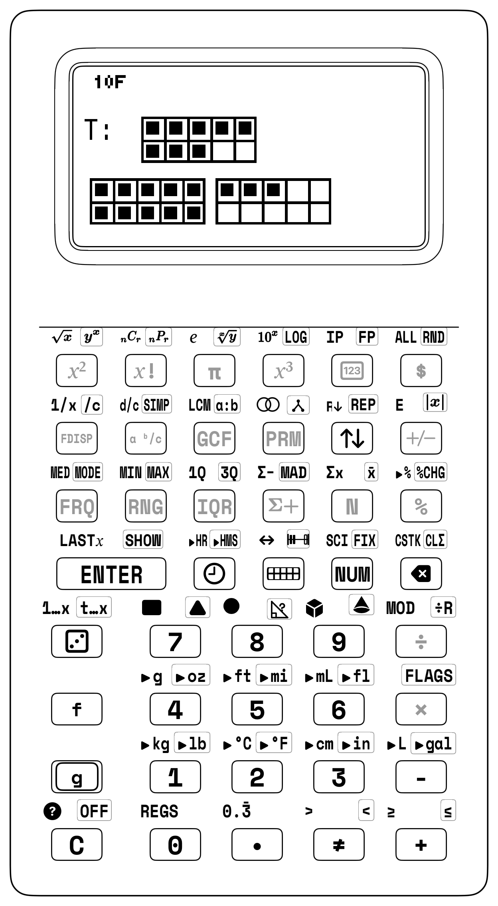
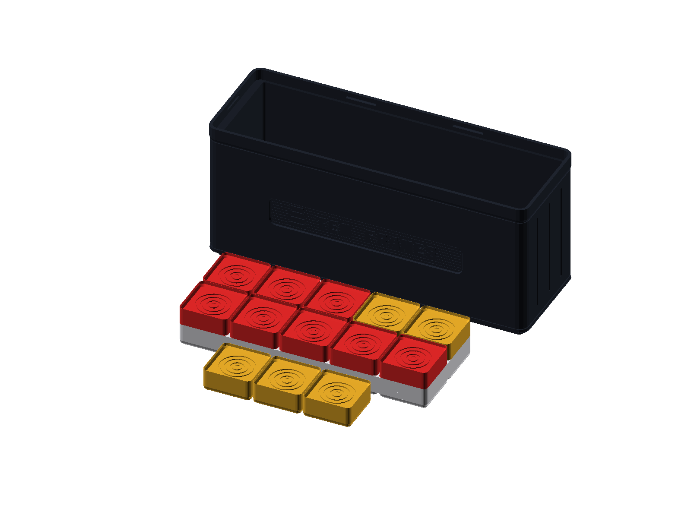

Counting, Number Lines & Place Value Studio
3.1 The Greatest Invention in Human History: How Ten Fingers and an Empty Shell Created Zero and Place Value
Five thousand years ago, across the fertile river valleys of the Tigris and Euphrates, an ancient shepherd stood before his flock at dawn. To keep account of his sheep, he dropped small clay pebbles into a woven pouch—one pebble for every sheep that passed through the wooden gate. If thirty sheep walked by, thirty pebbles weighed down his hip. But what happened when a city merchant wished to tally three thousand bushels of barley or thirty thousand bricks for a temple wall? Pockets tore; stone piles grew unmanageable; human memory buckled.
Ancient Egyptian scribes invented symbols for larger numbers: a coiled rope for one hundred, a lotus plant for one thousand, a pointing finger for ten thousand. Yet even with these hieroglyphic shortcuts, writing the number \(9,999\) required thirty-six separate symbols carved into stone!
Then came what historians of science consider the single greatest intellectual leap in human history: Place Value and the Invention of Zero.
In ancient India and among the classic Maya of Mesoamerica, thinkers made a startling realization. You do not need thousands of distinct symbols to write every number in the cosmos. You need only ten fingers, ten counting digits (\(0\) through \(9\)), and a spatial rule: where a symbol sits changes what it means. An empty shell glyph drawn in the sand—or an empty groove on a counting board—told the reader: nothing is in this column, but hold this place open! Because an empty groove held space, a single digit \(1\) could represent one sheep, ten sheep, one hundred sheep, or ten million stars simply by sliding across columns.
The decimal system was born of our anatomy: ten fleshy fingers resting on a tabletop.
On the StackCalc SC-6, this five-thousand-year evolution is not an abstract lecture; it is a living tactile laboratory. When you touch the precision-milled Ten-Frame Studio or slide the vivid dual-color beads of the Number Rack, you recreate the ancient counting table with your own fingers. And when you press [PV] Place Value mode or watch numbers leap across the open number line ([f] [LINE]), you see the machinery of base-10 decomposition come alive.
[NUM] (Standard Base-10 Arithmetic • 4-Stack XYZT • Visual sandboxes [▦], [g] [COUNT], and [LINE] open self-contained 2-stack screens)
Unlocked Keycaps Ribbon — Grades K–2 Visual & Counting Suite
• Visual Sandbox Keys: [▦] Ten-Frame Studio, [f] [LINE] Number Line, [g] [COUNT] Step Counter / Number Rack, [PV] Place Value Mode.
• Interactive Sandbox Stepper: [.] (Drops counters / steps by one).
• Core Operations: [+], [-], [ENTER], [C], [<-], Digits [0]–[9].
• Stack Configuration: [g] [FLAGS] (Cycle 2-LV / 4-LV), [g] [REP] Skip-Counting.
• Mode Navigation: Pressing [NUM] or [C] cleanly returns to baseline arithmetic with zero stack corruption.
3.2 Building Numbers: From Hands-On Blocks to the Screen Stack
Before numbers become symbols on a screen, they start as real objects in your hands! When you learn math on the StackCalc SC-6, you always move through three fun steps:
1. Hands-On Blocks (Touch It!): You build with real physical blocks, flip counters, and slide beads across rails on your desk.
2. Picture Screen (See It!): You tap sandbox keys like [▦] or [f] [LINE] to see your blocks mirrored as clear pictures on the daylight screen.
3. The Number Stack (Solve It!): You combine numbers on the 4-level stack with lightning speed!
For Parents & Teachers: The CRA Learning Continuum
In elementary mathematics education, Jerome Bruner's Concrete-Representational-Abstract (CRA) framework *([Bruner, 1966](appendix-c-formulas-and-conversions.md#cite-bruner1966))*, Zoltan Dienes's work on multibase arithmetic blocks *([Dienes, 1960](appendix-c-formulas-and-conversions.md#cite-dienes1960))*, Liping Ma's research on fundamental mathematics *([Ma, 1999](appendix-c-formulas-and-conversions.md#cite-ma1999))*, and the Singapore Math model *([Singapore MOE, 2014](appendix-c-formulas-and-conversions.md#cite-singapore2014))* provide the gold standard for developing deep mathematical understanding under national standards *([CCSSM, 2010](appendix-c-formulas-and-conversions.md#cite-ccssm2010))*.
 Figure 3.1: The Ten-Frame Studio with dual-color counters. Tactile grounding for five-anchors, decade bridging, and place value.
Figure 3.1: The Ten-Frame Studio with dual-color counters. Tactile grounding for five-anchors, decade bridging, and place value.
| Learning Stage | Physical Manipulative | SC-6 Representational Sandbox | Abstract Operational Stack |
|---|---|---|---|
| 1. Concrete (Enactive) | Ten-Frame Trays & Dual-Color Disks | Hands-on physical token placement | Sensory tactile certainty |
| 2. Representational (Iconic) | 20-Bead Rekenrek Number Rack | High-contrast [▦] and [g] [COUNT] LCD vector grids |
Visual subgroup perception |
| 3. Abstract (Symbolic) | Place Value Studio | [LINE] jump arcs and [PV] Place Value mode |
4-Register RPN stack arithmetic |
When you skip the concrete and representational phases and jump straight into symbolic calculation on conventional calculators, math can feel like a set of arbitrary rules without conceptual grounding. When faced with an expression such as \(8 + 5\), numerals can seem like disconnected symbols and the equal sign (=) like a magic black box.
The StackCalc SC-6 was engineered specifically to give you direct physical grounding. By pairing physical, open-source 3D-printed math manipulatives with dedicated hardware visual sandbox keys ([▦], [g] [COUNT], [f] [LINE], [PV]), the SC-6 bridges the tactile world of physical objects directly into the spatial logic of the RPN operational stack.

Parent's De-Stressing Guide: "Carry the 1" vs. The Ten-Frame Bridge
The Scenario: Your 1st or 2nd grader is given: 8 + 5 = ?
The Conventional Nightmare:
Parents teach what they were taught: "Put 8 on top, 5 on bottom. 8 + 5 is 13. Write down 3, carry the 1." The child asks: "Why do I carry 1 if it's 13?" The parent says: "Because it goes in the tens column." The child tears up, memorizing an abstract spatial ritual with zero meaning.
The 30-Second Tactile Cure:
Hand your child the 2×5 Ten-Frame Tray and dual-color tokens:
- Place 8 RED tokens in the frame. Point to the 2 empty pockets: "How many more does 8 need to become a full Ten?" ("Two!")
- You have 5 GOLD tokens waiting on the desk.
- Take 2 gold tokens and slide them into the frame: *CLICK!* "Ten is full! How many gold tokens are left on the desk?" ("Three!")
- One full Ten and 3 ones = 13!
On the SC-6: Key in `[▦] 8 [ENTER] 5 [+]`. The display registers 13.
The child has just executed the fundamental mental math strategy of the world's best mathematicians: Bridging Ten: 8 + 5 = (8 + 2) + 3 = 10 + 3.
3.2.1 Seeing Groups Instantly Without Counting One-by-One!
Have you ever rolled a dot die and known right away it was a 5, without having to point your finger and count \(1, 2, 3, 4, 5\)? That superpower is called seeing groups at a glance!
When you look at small groups of dots, blocks, or counters, your brain recognizes the total in a split second. By organizing numbers around friendly landmarks of 5 and 10, the SC-6 and your Ten-Frame Studio let you see big numbers just as easily as small numbers—without counting on your fingers!
For Parents & Teachers: The Cognitive Science of Subitizing
Subitizing—derived from the Latin subitus ("sudden")—is the cognitive capacity to instantaneously perceive how many items are in a small collection without counting them one by one.
Cognitive psychologists divide subitizing into two distinct levels:
• Perceptual Subitizing (Quantities 1 to 4): A hardwired neurobiological mechanism in the human visual cortex. You glance at 1, 2, 3, or 4 marbles and instantly recognize the total without counting.
• Conceptual Subitizing (Quantities 5 to 10+): The ability to perceive a larger quantity by recognizing spatial subgroups and mentally combining them into a whole. Viewing 7 dots arranged in a 5-and-2 configuration, you don't count $1, 2, 3, 4, 5, 6, 7$; you instantly see a full row of 5 plus 2 loose units ($5 + 2 = 7$).
The SC-6 hardware visual engines are explicitly architected around anchors of 5 and 10, providing the exact visual scaffolding needed to bridge perceptual recognition into effortless conceptual subitizing.
3.2.2 How Your Trays and Counters Are Built for Your Hands
The physical manipulative studios accompanying the SC-6 are engineered as modular tactile companions, standardized on the Gridfinity organization grid. Where the calculator provides a dark, glare-free slate upon which numbers are evaluated, the manipulative blocks supply immediate physical mass and vibrant color:
- Ten-Frame Studio & Dual-Color Counters: Dual ten-frame wells separated by a raised architectural divider rib. The physical tactile ridge provides an unmistakable boundary at five, allowing fingers to verify group sizes without counting. Chamfered counter disks in contrasting coral and amber seat firmly into each pocket.
- Number Rack (Rekenrek): Dual horizontal stainless guide rails holding smoothly sliding beads arranged in five-and-five color clusters, mirroring the two-register display of the calculator.
- Place Value Studio: Precision metric base-10 unit cubes, ten-rods, and hundred-flats. Each ten-rod equals exactly ten unit cubes placed end-to-end; each hundred-flat matches ten rods side-by-side. Weight and volume scale proportionally with numerical magnitude.
- Counting & Array Tiles: Interlocking tactile tiles engineered with precise slip-fit tabs that assemble into rigid 2D arrays and vertical counting towers.
- Prime Factor Studio: Precision logarithmic blocks whose physical lengths correspond to the logarithms of prime factors, allowing multiplication to be experienced as collinear block addition.
3.3 Concrete Bridge to the Ten-Frame Studio ([▦])
The Ten-Frame helps you see numbers in groups of five and ten. It builds instant visual recognition and shows why 10 is such a powerful landmark number.
[!NOTE] Architectural Geometry of the Ten-Frame Tray:
The physical Ten-Frame Studio features a dual \(2 \times 5\) compartment field separated by a raised central divider rib. This rib physically isolates the first five units from the second five units, establishing instant five-structure group recognition in high-contrast matte compartments with vivid dual-color counters.
3.3.1 Entering the Ten-Frame Sandbox
To activate the interactive Ten-Frame Studio on the SC-6:
1. Enter a starting quantity into Register \(X\) (for example, tap [7]).
2. Press the hardware [▦] key (Row 1, Col 1).
3. The transflective dot-matrix LCD automatically shifts from its 4-register numeric layout into its two-zone concrete layout:
- Upper Screen (Ten-Frame Grid): High-contrast 1-bit vector bitmap depicting two ten-frame grids with 7 filled circular counters.
- Lower Screen (Active Stack): Simplified 2-line arithmetic stack displaying Register \(T\) (Top) and Register \(X\) (Active).
| Display Region | Visual & Numeric Representation (X = 7) |
|---|---|
| Upper Screen (Ten-Frame Grid) | Top row: [●][●][●][●][●] (\(5\) filled); Bottom row: [●][●][ ][ ][ ] (\(2\) filled, \(3\) empty) |
| Lower Screen (Active Stack) | Y: 0 | X: 7 (\(5 + 2 = 7\) seen at a glance) |
Notice how the 7 counters are organized: - The top row of the first ten-frame is completely filled with 5 counters. - The bottom row contains exactly 2 counters. - The remaining 3 slots in the first frame are empty. - The second ten-frame remains completely vacant.
When you look at this screen, you don't need to count \(1, 2, 3, 4, 5, 6, 7\). Your eyes instantly recognize the full top row of 5 plus the bottom 2 units: \(5 + 2 = 7\).
3.3.2 Interactive Stepping with the Decimal Key ([.])
While inside the Ten-Frame Studio, you can interact directly with the screen. Pressing the decimal key [.] drops counters into the frame one by one:
- Tap [.] \(\longrightarrow\) Counter 8 drops into the bottom row (\(X\) updates to 8).
- Tap [.] \(\longrightarrow\) Counter 9 drops into the bottom row (\(X\) updates to 9).
- Tap [.] \(\longrightarrow\) Counter 10 completes the first ten-frame! The frame border flashes inverted pixels for 300 ms to provide an unmistakable visual cue that a full decade has closed.
- Tap [.] \(\longrightarrow\) Counter 11 cascades across the architectural divider rib into the second ten-frame (\(X\) updates to 11).
STEPPING PAST THE DECADE BOUNDARY VIA [.]: Frame State at X = 9: [●][●][●][●][●] | [●][●][●][●][ ] (1 empty slot remaining) Tap [.]: [●][●][●][●][●] | [●][●][●][●][●] (FULL FRAME FLASH: Decade closed! X = 10) Tap [.]: Frame 1: [●][●][●][●][●] | [●][●][●][●][●] Frame 2: [●][ ][ ][ ][ ] | [ ][ ][ ][ ][ ] (Cascaded into Frame 2! X = 11)
For Parents & Teachers: Homeschooler Diagnostic Checkpoint
• Ask your child: "How many empty spots are left in the first ten-frame?"
• If there are 7 counters, your child can visually identify 3 empty spaces.
• Have them press [3] [+]. The display completes the ten-frame and shows $X = \mathbf{10}$!
3.4 Making Ten & The "Bridging Ten" Strategy
When you first add across a ten boundary (like \(8 + 5\)), counting on your fingers ("eight... nine, ten, eleven, twelve, thirteen") can feel slow and tricky. The Ten-Frame Studio teaches you the foundational Bridging Ten strategy:
The Ten-Frame Studio teaches the foundational Bridging Ten strategy: $\(\mathbf{8 + 5 = 8 + (2 + 3) = (8 + 2) + 3 = 10 + 3 = 13}\)$
The Bridging Ten Mental Model: Decomposing into a Decade
• Step 1 (Anchor the 8): Start with 8 counters in the first frame (2 empty slots remain):
[●][●][●][●][●] | [●][●][●][ ][ ]
• Step 2 (Decompose the Addend): You have 5 counters to add. Decompose 5 into 2 + 3. Transfer 2 counters into Frame 1 to make a complete 10!
[●][●][●][●][●] | [●][●][●][●][●] ← 10 (Full Frame!)
• Step 3 (Place the Remainder): Place the remaining 3 counters into Frame 2:
[●][●][●][ ][ ] | [ ][ ][ ][ ][ ] ← 3 in Frame 2
• Total: 10 + 3 = 13! Mental addition across decades becomes effortless spatial grouping.
3.4.1 Station Lesson 3.1: Ten-Frame Bridging Ten & Dual-Color Counters
STATION LESSON 3.1: TACTILE SETUP
• Manipulatives: Ten-Frame Tray with Dual-Color Counters (Coral Red / Amber Gold) • Hardware: StackCalc SC-6 Elementary in [▦] Ten-Frame Mode • Goal: Add 8 + 5 without finger counting via the decade bridge

- Concrete Phase (Desk Setup):
- Place 8 Red counters into Frame 1 of the physical tray (filling the top row of 5 and bottom row of 3).
- In your hand, hold 5 Gold counters to add.
- Notice that Frame 1 needs exactly 2 counters to become completely full (reaching 10).
- Drop 2 Gold counters into Frame 1, completing the ten: \(8 + 2 = 10\).
-
Drop the remaining 3 Gold counters into Frame 2: \(10 + 3 = 13\).
-
Representational Phase (Screen Verification):
- Press
[8] [▦]. The SC-6 LCD renders 8 circular dots across the dual ten-frame. - Press
[2] [+]: Two counters land in Frame 1, flashing the decade banner: \(X = \mathbf{10}\). -
Press
[3] [+]: Three counters land in Frame 2: \(X = \mathbf{13}\). -
Abstract Phase (RPN Stack Trace Table):
| Keystroke | Register T | Register Z | Register Y | Register X (Display) |
|---|---|---|---|---|
| [8] [▦] | 0 | 0 | 0 | 8 |
| [2] [+] | 0 | 0 | 0 | 10 |
| [3] [+] | 0 | 0 | 0 | 13 |
For Parents & Teachers: Teacher Dialogue Script
Teacher: "Look at our Ten-Frame screen with 8 filled circles. How many empty boxes are left to make a full ten?"
Student: "Two empty boxes!"
Teacher: "Great. We need to add 5 circles. If we drop 2 circles into the empty boxes to make ten, how many are left in our hand?"
Student: "Three are left in our hand!"
Teacher: "Ten plus three makes what?"
Student: "Thirteen!"
Teacher: "Did we have to count on our fingers?"
Student: "No! We just made ten and added the rest!"
3.5 The Step Counter Dynamics & Stacking Tile Heights
How do you discover that counting forward is mathematically identical to repeatedly adding one? On conventional algebraic calculators, pressing + 1 = = = relies on hidden accumulator memory that obscures the underlying mechanism. On the SC-6, step counting is completely transparent and verified through physical tile heights and stack mechanics.
3.5.1 Station 3.2: Counting Up with Stacking Tiles
STATION LESSON 3.2: TACTILE SETUP
• Manipulatives: Counting & Array Studio with 144 Interlocking Stacking Tiles • Hardware: StackCalc SC-6 Elementary (2-LV and 4-LV Stack Modes) • Architectural Benchmark: 12 Tiles × 7.0 mm = 84.0 mm (1 Whole Datum)

STACKING TILE VERTICAL TOWER LADDER: [ TILE 12 ] -> 84.0 mm (Flush with 1-Whole Fraction Studio Tower!) X = 12 [ TILE 11 ] -> 77.0 mm X = 11 [ TILE 10 ] -> 70.0 mm X = 10 [ TILE 9 ] -> 63.0 mm X = 9 [ TILE 8 ] -> 56.0 mm X = 8 | Stacked Tile Count (
X) | Cumulative Physical Height | Geometric & Fraction Studio Datum | | :---: | :---: | :--- | | Tile 1 (X = 1) | \(7.0\text{ mm}\) | \(1\text{U}\) visible increment \(= 1/12\) Fraction Tower | | Tile 2 (X = 2) | \(14.0\text{ mm}\) | \(1/6\) Fraction Tower datum | | Tile 3 (X = 3) | \(21.0\text{ mm}\) | \(1\) Unit Cube equivalent \(= 1/4\) Fraction Tower | | Tile 4 (X = 4) | \(28.0\text{ mm}\) | \(1/3\) Fraction Tower datum | | Tile 6 (X = 6) | \(42.0\text{ mm}\) | Halfway datum \(= 1/2\) Fraction Tower | | Tile 12 (X = 12) | \(84.0\text{ mm}\) | Full \(1\text{-Whole}\) Master Fraction Tower |
Hands-On Stacking Protocol:
- In 2-Stack Mode (
[g] [FLAGS]\(\to\)2-LV): - Place 1 Archival White tile on the desk (\(7.0\text{ mm}\) height). Press
[1] [ENTER] [1] [+]\(\to X = 2\). - Stack tile 2 on top (\(14.0\text{ mm}\)). Tap
[+]\(\to X = 3\). - Stack tile 3 on top (\(21.0\text{ mm}\)). Tap
[+]\(\to X = 4\). - Continue stacking in cadence with tapping
[+]until reaching 12 tiles (\(84.0\text{ mm}\)). - Compare your 12-tile tower against the solid 1-Whole Fraction Studio tower: they are exactly flush to the fraction of a millimeter!
| Keystroke | Register T (Constant) | Register X (Display) | Physical Tile Height on Desk (7.0 mm per Tile) |
|---|---|---|---|
| [1] [ENTER] | 1 | 1 | 1 Tile = 7.0 mm |
| [1] | 1 | 1 | 1 Tile = 7.0 mm |
| [+] | 1 | 2 | 2 Tiles = 14.0 mm |
| [+] | 1 | 3 | 3 Tiles = 21.0 mm (1 Unit Cube!) |
| [+] | 1 | 4 | 4 Tiles = 28.0 mm |
| [+] | 1 | 5 | 5 Tiles = 35.0 mm |
| [+] | 1 | 6 | 6 Tiles = 42.0 mm (1/2 Whole Tower) |
| [+] | 1 | 7 | 7 Tiles = 49.0 mm |
| [+] | 1 | 8 | 8 Tiles = 56.0 mm |
| [+] | 1 | 9 | 9 Tiles = 63.0 mm |
| [+] | 1 | 10 | 10 Tiles = 70.0 mm |
| [+] | 1 | 11 | 11 Tiles = 77.0 mm |
| [+] | 1 | 12 | 12 Tiles = 84.0 mm (1 Whole Tower!) |
- In 4-Stack Mode with Superpower 1 (
[g] [REP]): - Ensure 4-Stack mode is active (
[g] [FLAGS]\(\to\)4-LV). - Press
[1] [g] [REP]: All four registers (\(T, Z, Y, X\)) receive 1. - Now, each tap of
[+]drops Register \(T\) downward, advancing the display count (\(2, 3, 4, \dots, 12\)) in sync with placing physical tiles!
| Keystroke | Register T (Constant) | Register Z | Register Y | Register X (Display) |
|---|---|---|---|---|
| [1] | 0 | 0 | 0 | 1 |
| [g] [REP] | 1 | 1 | 1 | 1 |
| [+] | 1 | 1 | 1 | 2 |
| [+] | 1 | 1 | 1 | 3 |
| [+] | 1 | 1 | 1 | 4 |
| [+] | 1 | 1 | 1 | 5 |
| [+] | 1 | 1 | 1 | 6 |
- Counting Backward (Subtraction Towers):
- Starting with a 10-tile tower (\(70.0\text{ mm}\)):
[1][0] [ENTER] [1]. - Remove 1 tile from the tower on the desk. Tap
[-]: \(X = \mathbf{9}\). - Remove another tile. Tap
[-]: \(X = \mathbf{8}\). - Countdown continues to \(X = \mathbf{0}\) when the tabletop is completely clear: Blast off!
| Keystroke | Register T | Register X |
|---|---|---|
10 [ENTER] |
10 | 10 |
| [1] [-] | 10 | 9 |
| [-] | 10 | 8 |
| [-] | 10 | 7 |
| [-] | 10 | 6 |
| [-] | 10 | 5 |
| [-] | 10 | 4 |
| [-] | 10 | 3 |
| [-] | 10 | 2 |
| [-] | 10 | 1 |
| [-] | 10 | 0 |
3.5.2 Station Lesson 3.3: Mind-Blowing Epiphany 1 — The Sum of Odd Numbers is Always a Perfect Square!
For Parents & Teachers: Curriculum Standards
Common Core Standards Alignment: CCSS.MATH.CONTENT.3.OA.D.9, 4.OA.C.5.
- Physical Manipulatives: 16 Counting Tiles from the Counting Studio: 1 Archival White, 3 Cobalt Blue, 5 Radiant Gold, 7 Slate Gray.
What happens when you add consecutive odd numbers starting from 1? $\(1 = 1 = 1^2\)$ $\(1 + 3 = 4 = 2^2\)$ $\(1 + 3 + 5 = 9 = 3^2\)$ $\(1 + 3 + 5 + 7 = 16 = 4^2\)$ $\(1 + 3 + 5 + 7 + 9 = 25 = 5^2\)$
Why is this always true for every single square number in the universe? The ancient Pythagoreans called this the Gnomon Principle, and it is instantly self-evident when built with the four-color physical counting tiles:
Visual Proof Without Words: Odd Numbers Build Squares
The ancient Pythagoreans discovered that geometric squares grow by wrapping L-shaped brackets called gnomons around smaller squares:
- Stage 1 (1 Tile):
1 = 1²(Single white corner tile). - Stage 2 (1 + 3 = 4 Tiles): Three blue tiles wrap around the white tile, creating a
2 × 2 = 4 = 2²square. - Stage 3 (1 + 3 + 5 = 9 Tiles): Five gold tiles wrap around the 2×2 square, forming a
3 × 3 = 9 = 3²square. - Stage 4 (1 + 3 + 5 + 7 = 16 Tiles): Seven gray tiles wrap around the 3×3 square, forming a
4 × 4 = 16 = 4²square.
The Epiphany: Every consecutive odd number (2n - 1) forms an L-shaped gnomon that wraps around an (n-1) × (n-1) square to produce the next n × n square. Arithmetic addition and geometric area are two reflections of the exact same truth!
Verification on the SC-6:
Key in the running odd sum in RPN:
- [1] [ENTER] [3] [+] \(\longrightarrow \mathbf{4}\) (\(2^2\))
- Step-by-Step RPN Reasoning & Stack Logic:
1. 1 [ENTER] — Lay the first single unit cube in the center of the counting tray (\(Y = 1\)).
2. 3 [+] — Snap an L-shaped 3-cube gnomon around the corner, completing a solid \(2 \times 2\) square (\(X = 4\)).
- [5] [+] — Snap a 5-cube gnomon along the two outer edges \(\longrightarrow \mathbf{9}\) (\(3 \times 3\) square).
- [7] [+] — Wrap a 7-cube band along the perimeter \(\longrightarrow \mathbf{16}\) (\(4 \times 4\) square).
- [9] [+] — Wrap a 9-cube band along the perimeter \(\longrightarrow \mathbf{25}\) (\(5 \times 5\) square).
- [1] [1] [+] \(\longrightarrow \mathbf{36}\) (\(6 \times 6\) square)
- Tap geometric square root [f] [√x] \(\longrightarrow \mathbf{6}\)! The physical side length of the square appears instantly.
3.6 Number Line Navigation & Visual Jump Arcs ([f] [LINE])
The Open Number Line lets you visualize addition and subtraction as physical travel along a continuous spatial pathway.
3.6.1 The Number Line Sandbox
Tapping [f] [LINE] opens the dynamic Number Line Studio. The SC-6 engine automatically calculates decade tick scaling (\(1, 2, 5, 10\)) to render up to 13 high-contrast ticks:
| Display Zone | Visual Representation (2 + 5 = 7) |
|---|---|
| Jump Arc Layer | Parabolic forward jump arc labeled +5 spanning from tick 2 to tick 7 |
| Number Line Axis | High-contrast tick ruler spanning 0, 1, 2, 3, 4, 5, 6, 7, 8, 9, 10, 11 |
Register T: |
2 (Starting coordinate) |
Register X: |
7 (Landing coordinate after +5 jump) |
3.6.2 Visual Jump Arcs
When an operation executes on the number line, the screen animates a parabolic jump arc connecting the starting coordinate to the landing coordinate:
- Forward Jump (\(2 + 5 = 7\)): An arc curves forward from 2 to 7, clearly labeled with +5.
- Backward Jump (\(9 - 4 = 5\)): An arc leaps backward from 9 to 5, labeled -4.
The engine tracks lastOp, lastOpStart, lastOpEnd, and lastOpDelta, giving you immediate visual confirmation of distance, direction, and magnitude.
Number Line Jump Arc Dynamics
• Forward Jump (Addition): Adding a positive number leaps forward. For 14 + 8, an arc sweeps from 14 across 8 increments, landing cleanly on 22: 14 ──(+8)──> 22.
• Backward Jump (Subtraction): Subtracting steps backward. For 22 - 5, an arc leaps leftward from 22 across 5 increments, landing on 17: 17 <──(-5)── 22.
The SC-6 display animates these exact parabolic paths in real time, making distance, direction, and magnitude visually tangible.
3.7 The European Rekenrek / Number Rack ([g] [COUNT])
The 100-bead and 20-bead Rekenrek (Number Rack) was invented by Adrian Treffers at the Freudenthal Institute in the Netherlands. It consists of two parallel stainless-steel rods, each carrying beads divided into color-coded groups of 5 Red and 5 White.
REKENREK 100-BEAD DUAL-WIRE GEOMETRY
Wire 1 (Tens): [🔴🔴🔴🔴🔴][⚪⚪⚪⚪⚪] --- [🔴🔴🔴🔴🔴][⚪⚪⚪⚪⚪] Wire 2 (Ones): [🔴🔴🔴🔴🔴][⚪⚪⚪⚪⚪] --- [🔴🔴🔴🔴🔴][⚪⚪⚪⚪⚪]
3.7.1 Operating Rekenrek Mode ([g] [COUNT])
- Type a target number (for example,
[1] [4]). - Press
[g] [COUNT](or[g] [COUNT]). - The transflective LCD maps the quantity across the two wires:
- Wire 1 shows 10 beads slid to the active left side (5 red, 5 white).
- Wire 2 shows 4 red beads slid to the active left side.
- Pressing
[.]slides individual beads one by one across the wire, up to 100!
3.7.2 Decomposing Teen Numbers (\(11\) to \(19\))
Teen numbers can sometimes sound confusing in English. In languages like Chinese or Japanese, 14 is spoken directly as "ten-four", immediately revealing its place-value structure! In English, "fourteen" sounds like four comes first, which can tempt you to write \(41\) instead of \(14\).
On the Rekenrek screen: - 14 is rendered as: Full Wire 1 (10) + 4 Red Beads on Wire 2. - You can visually see that 14 is literally \(10 + 4\). - The confusion vanishes the moment you see the physical beads!
3.8 Place Value Decomposition Studio ([PV])
Place value is one of the most exciting secrets in mathematics. When you look at a big number like \(4,725\), it isn't just four separate digits sitting next to each other ("4", "7", "2", "5"). It is actually four distinct bundled packages working together: $\(4,725 = 4,000 + 700 + 20 + 5\)$
The SC-6 provides a dedicated hardware Place Value Engine ([PV]) on Row 1, Col 5.
The physical base-10 blocks embody metric proportions with architectural rigor: - Unit Cube (\(1\text{U}\)): A \(10 \times 10 \times 10\text{ mm}\) cube in solar amber with subtle chamfered edges for easy grasping. - Ten-Rod (\(10\text{U}\)): A \(10 \times 10 \times 100\text{ mm}\) linear bar scoring ten distinct cubic segments, matching ten unit cubes placed edge to edge. - Hundred-Flat (\(100\text{U}\)): A \(10 \times 100 \times 100\text{ mm}\) planar grid representing ten rods bonded along their flanks. - Thousand-Cube (\(1000\text{U}\)): A solid \(100 \times 100 \times 100\text{ mm}\) monolithic block with mass equivalent to one thousand individual unit cubes, providing tactile weight that makes place value unforgettable.
 Figure 3.3: The Place Value Studio. Base-10 metric unit cubes, 10U rods, and 100U flats physicalize positional notation, pairing directly with the SC-6 [PV] mode.
Figure 3.3: The Place Value Studio. Base-10 metric unit cubes, 10U rods, and 100U flats physicalize positional notation, pairing directly with the SC-6 [PV] mode.
3.8.1 Operating Place Value Mode
The [PV] key extracts the specific digit occupying any target power of 10. It expects:
- The Subject Number in Register \(Y\).
- The Target Place (\(1, 10, 100, 1000\)) in Register \(X\).
Mathematical definition: $\(\text{placeValueDigit}(Y, X) = \left\lfloor \frac{|Y|}{X} \right\rfloor \bmod 10\)$
Example: Decomposing 4,725
- Enter the subject number:
[4] [7] [2] [5] [ENTER]. - Query the Tens place:
[1] [0] [PV]. - Register \(X\) displays:
2(There are 2 tens in 4,725!).
| Keystroke | Display T | Display Z | Display Y (Subject) | Display X (Query / Result) |
|---|---|---|---|---|
4725 |
0 | 0 | 0 | 4725 |
| [ENTER] | 0 | 0 | 4725 | 4725 |
10 |
0 | 0 | 4725 | 10 |
| [PV] | 0 | 0 | 4725 | 2 |
3.8.2 Why the Parts Always Add Back to Your Whole Number!
Notice the crucial behavior in the stack trace above: Register \(Y\) is strictly preserved (4725), and stack lift is disabled!
This invariant allows you to rapidly query every single place value column without re-typing your number:
- Query Hundreds: Type [1] [0] [0] [PV] \(\longrightarrow X = \mathbf{7}\) (7 hundreds).
- Query Thousands: Type [1] [0] [0] [0] [PV] \(\longrightarrow X = \mathbf{4}\) (4 thousands).
- Query Ones: Type [1] [PV] \(\longrightarrow X = \mathbf{5}\) (5 ones).
(Hardware Invariant: Place value extraction preserves Register \(Y\) while populating Register \(X\) with the selected decimal place value.)
3.8.3 Exploring Tenths and Hundredths with Place Value
In Grade 5, place value extends to the right of the decimal point (tenths and hundredths):
- Query Tenths (\(0.1\)): Type [.] [1] [PV] on \(345.67 \longrightarrow X = \mathbf{6}\).
- Query Hundredths (\(0.01\)): Type [.] [0] [1] [PV] on \(345.67 \longrightarrow X = \mathbf{7}\).
3.8.4 Showdown: Algebraic Reversal vs. Forward RPN Place Value
| Challenge Problem | Conventional Algebraic Syntax | StackCalc RPN Workflow | Algebraic Failure Mechanism | RPN Engineering Triumph |
|---|---|---|---|---|
| Stadium Light Wattage \((30 \times 1500) + (10 \times 2000)\) |
30 [×] 1500 [+] 10 [×] 2000 [=] |
30 [ENTER] 1500 [×] 10 [ENTER] 2000 [×] [+] |
Hierarchy confusion; parenthesis overload | Subtotals preserved on stack; zero parentheses |
| Decade Bridging \(8 + 5 = 8 + 2 + 3\) |
8 [+] 2 [+] 3 [=] |
8 [ENTER] 2 [+] 3 [+] |
Loss of intermediate decade landmark | Visual flash at decade \(10\); smooth accumulation |
| Place Value Query Extract tens of \(4,725\) |
Re-enter number, divide by 10, truncate | 4725 [ENTER] 10 [PV] |
Destructive division destroys base number | Preserves \(Y\) subject value across chained queries |
| Constant Counting Twos ladder cadence |
2 [+] 2 [=] [=] [=] ... |
2 [ENTER] 2 [+] [+] [+] ... |
Flaky algebraic constant equals-key state | Deterministic stack retention on upper shelf |
3.9 Big Numbers in Nature: Expanding Horizons
Once you master place value bundling, you are ready to explore the vast scale of our physical world:
3.9.1 Real-World Example 1: The Earth-Moon Distance (\(384,400\text{ km}\))
The average distance from the Earth to the Moon is \(384,400\text{ kilometers}\).
Let us decompose this colossal number using [PV]:
1. [3] [8] [4] [4] [0] [0] [ENTER]
2. [1] [0] [0] [0] [0] [0] [PV] \(\longrightarrow X = \mathbf{3}\) (3 hundred-thousands \(= 300,000\text{ km}\)).
3. [1] [0] [0] [0] [0] [PV] \(\longrightarrow X = \mathbf{8}\) (8 ten-thousands \(= 80,000\text{ km}\)).
4. [1] [0] [0] [0] [PV] \(\longrightarrow X = \mathbf{4}\) (4 thousands \(= 4,000\text{ km}\)).
5. [1] [0] [0] [PV] \(\longrightarrow X = \mathbf{4}\) (4 hundreds \(= 400\text{ km}\)).
EXPEDITION CHALLENGE: If an Apollo spacecraft travels at 4,000 km/hour, how many hours does it take to reach the Moon? Keystrokes:
[3] [8] [4] [4] [0] [0] [ENTER] [4] [0] [0] [0] [÷]\(\rightarrow\)96Result: X = 96.1 hours (about 4 days of spaceflight!).
3.9.2 Real-World Example 2: Human Heartbeats in a Year (\(42,048,000\))
Your heart beats approximately \(80\text{ times per minute}\) when you are resting. How many times does the heart beat in an entire year? - 60 minutes in an hour: \(80 \times 60 = 4,800\text{ beats/hour}\). - 24 hours in a day: \(4,800 \times 24 = 115,200\text{ beats/day}\). - 365 days in a year: \(115,200 \times 365 = \mathbf{42,048,000\text{ beats/year}}\)!
Let us calculate this continuously on the SC-6 stack without writing down any scratch paper: | Keystroke | Register T | Register Z | Register Y | Register X | | :--- | :--- | :--- | :--- | :--- | | 80 [ENTER] | 0 | 0 | 80 | 80 | | 60 [×] | 0 | 0 | 0 | 4800 | | 24 [×] | 0 | 0 | 0 | 115200 | | 365 [×] | 0 | 0 | 0 | 42048000 |
Now let's query the Ten-Millions place with [PV]:
- Type [ENTER] [1] [0] [0] [0] [0] [0] [0] [0] [PV] \(\longrightarrow X = \mathbf{4}\) (4 ten-millions!).
- Type [1] [0] [0] [0] [0] [0] [0] [PV] \(\longrightarrow X = \mathbf{2}\) (2 millions!).
3.9.3 Real-World Example 3: Distance to Mars (\(225,000,000\text{ km}\))
At its average orbital distance, the planet Mars is approximately \(225,000,000\text{ kilometers}\) from Earth.
- Hundreds of Millions place: 225000000 [ENTER] 100000000 [PV] \(\longrightarrow X = \mathbf{2}\).
- Tens of Millions place: 10000000 [PV] \(\longrightarrow X = \mathbf{2}\).
- Millions place: 1000000 [PV] \(\longrightarrow X = \mathbf{5}\).
If a robotic probe travels at \(25,000\text{ km/h}\), how many days will the voyage take?
- Keystrokes: 225000000 [ENTER] 25000 [÷] 24 [÷] \(\longrightarrow X = \mathbf{375\text{ days}}\) (just over 1 year!).
3.9.4 Real-World Example 4: Red Blood Cells in the Human Body (\(25,000,000,000,000\))
An average human body contains approximately 25 trillion red blood cells.
In expanded notation:
$\(25,000,000,000,000 = 2 \times 10^{13} + 5 \times 10^{12}\)$
Decompose on SC-6:
- Ten-trillions place: 25000000000000 [ENTER] 10000000000000 [PV] \(\longrightarrow X = \mathbf{2}\).
- Trillions place: 1000000000000 [PV] \(\longrightarrow X = \mathbf{5}\).
For Parents & Teachers: Classroom Dialogue Scripts & Misconception Diagnostics
Place Value as a Conceptual Diagnostic: In elementary mathematics education, place value is the foundational diagnostic watershed. When students fail to comprehend bundling and positional notation in early grades, they encounter severe barriers when attempting multi-digit regrouping, long division, and decimal arithmetic.
The SC-6 resolves this disconnect by grounding positional notation in physical geometry: metric base-10 blocks make magnitudes visceral (a thousand-cube possesses tangible heft, whereas unit cubes rest lightly on a fingertip), and the dedicated [PV] key functions not as a computation solver, but as a structural interrogator. Querying the tens place reveals 2; querying the hundreds place reveals 7. The calculator acts as an interactive analytical lens rather than a black-box oracle.
Resolving Inversion Misconceptions with Visual Sandboxes: Early learners frequently reverse digits—for instance, writing 41 for fourteen because the "four" is heard first. Similarly, the concept that ten individual units can be traded for a single ten-rod often feels like arbitrary symbolism on worksheets. The SC-6 Ten-Frame Studio ([▦]) and Rekenrek Number Rack eliminate this confusion: stepping counters with [.] until the tenth counter fills the frame visually demonstrates that "a ten is a completed container." Teen numbers are instantly visualized as one full container plus loose individual units, anchoring mental arithmetic in geometric certainty.
Register Architecture of the Place Value Engine: On legacy RPN scientific calculators, extracting a specific digit from an integer required a multi-step sequence involving division, integer truncation, and subtraction:
$$d = \left\lfloor \frac{|Y|}{X} \right\rfloor - 10 \times \left\lfloor \frac{|Y|}{10X} \right\rfloor$$
Such an approach is cognitively inaccessible to elementary students. The SC-6 implements a dedicated firmware instruction for [PV]: (1) Preserved Subject Register: The subject number parked in Register $Y$ remains unchanged after evaluation. (2) Stack Lift Suppression: Stack lift is intentionally suppressed on subsequent numeric entries following [PV]. (3) Rapid Multi-Column Interrogation: The student enters the subject number once, then queries columns ($10$, $100$, $1000$, $10000$) in rapid succession without stack overflow or losing the subject quantity.
Structural Decompositions in Rapid Mental Math: In competitive mental math sprints and upper-elementary challenges, students learn to isolate positional components directly through [PV] and visual number-line intervals ([f] [LINE]) rather than computing lengthy manual algorithms on paper.
Classroom Script 3.1: Bridging Ten with Hungry Frogs
• Teacher: "Class, imagine a lily pad pond with two big logs. Each log has room for exactly 10 frogs. Right now, Log 1 has 9 green frogs sitting on it. Log 2 is completely empty."
• Noah: "Log 1 is almost full! There's only one spot left!"
• Teacher: "Exactly! Now, a family of 6 brown frogs hops into the pond wanting to sit down. How many frogs can hop onto Log 1?"
• Noah: "Only 1! Because $9 + 1 = 10$."
• Teacher: "So Log 1 is now full. How many brown frogs are still looking for a seat?"
• Noah: "We started with 6. If 1 sat on Log 1, then $6 - 1 = 5$ frogs are left."
• Teacher: "Where do those 5 frogs go?"
• Noah: "Onto Log 2!"
• Teacher: "So how many frogs total?"
• Noah: "One full ten-log plus 5 frogs makes 15 frogs!"
• Teacher: "Look at your SC-6 Ten-Frame screen: `9 [▦] 1 [+] 5 [+]`. What do you see?"
• Noah: "Frame 1 has 10 dots, Frame 2 has 5 dots, and $X = 15$! It matches the frogs exactly!"
Classroom Script 3.2: The Mystery of the Zero in 4,005
• Liam: "Teacher, on my worksheet I had to write 'four thousand five'. I wrote $45$ because zero means nothing, so I didn't write it."
• Teacher: "Liam, let's test that on the SC-6 Place Value Engine. Type `45 [ENTER] 1000 [PV]`."
• Liam: "The screen says $X = 0$! It says there are zero thousands in 45!"
• Teacher: "Right! 45 is just 4 tens and 5 ones. If I offer to pay you $\$45$ or $\$4,005$ for mowing my lawn, which one would you pick?"
• Liam (grinning): "Four thousand five dollars, of course!"
• Teacher: "Why? What are the zeros doing in $4,005$?"
• Liam: "They hold the spots! The hundreds spot has 0 flats, and the tens spot has 0 rods, so the 4 can stay in the thousands place!"
• Teacher: "Brilliant! The zeros are place holders. Type `4005 [ENTER] 1000 [PV]`. What does $X$ show?"
• Liam: "It shows 4! The thousands digit is 4!"
Classroom Script 3.3: Teen Number Reversals (14 vs 41)
• Teacher: "Emma, read this number on the desk: $14$."
• Emma: "Fourteen."
• Teacher: "When you write it down, sometimes you write 4 first and get 41. Let's put 14 on our Rekenrek screen: `14 [g] [COUNT]`."
• Emma: "Wire 1 has 10 beads slid to the left. Wire 2 has 4 beads."
• Teacher: "Which wire has more beads?"
• Emma: "Wire 1! It has ten beads!"
• Teacher: "And which digit represents that ten?"
• Emma: "The 1! Because it's 1 ten!"
• Teacher: "So the 1 must come FIRST, on the left! $1$ ten and $4$ ones. If you wrote 41, how many tens would that be?"
• Emma: "Four tens! That would be forty-one!"
• Teacher: "Exactly. The ten always leads the march!"
Classroom Script 3.4: Why Did My Step Counter Stop?
• Lucas: "Teacher, I was doing the step counter in 4-stack mode. I pressed `1 [ENTER] 1 [+]` and it showed 2. But when I pressed `[+]` again, it stayed at 2! It didn't climb to 3!"
• Teacher: "Let's look at the elevator floors, Lucas. In 4-stack mode, when you pressed `[+]`, Floor 2 (Y) combined with Floor 1 (X) to make 2. But what was waiting on Floor 3 (Z) to drop down?"
• Lucas: "Nothing was there! Floor 3 was 0!"
• Teacher: "So when Floor 3 dropped to Floor 2, it dropped a 0. What is $2 + 0$?"
• Lucas: "Two! That's why it didn't change!"
• Teacher: "To make the 1 permanent on every floor, what superpower key do we use?"
• Lucas: "Superpower 1! `[g] [REP]`!"
• Teacher: "Press `1 [g] [REP] [+] [+] [+]`. What happens now?"
• Lucas: "2, 3, 4, 5, 6! It's climbing like a rocket!"
3.10 Story-Driven Problem Expeditions (45 Elementary Reference Scenarios)
Rather than completing isolated rote worksheets, you join four mathematical expeditions that traverse human history—from ancient market stalls to deep space observatories.
Hands-On Studio Proof: Blocks → Calculator
Step 1 (Physical Concrete Intuition): Take your 3D-printed Ten-Frame tray and counting tokens. Drop 8 red tokens into the first tray. Observe the 2 empty pockets. Take 5 gold tokens: place 2 into the empty pockets to complete the first ten-frame, and place the remaining 3 tokens into the second tray. Touch the full tray: 1 Ten. Touch the second tray: 3 Ones. Total: 13.
Step 2 (The Representational Bridge): Tap [▦] on your SC-6 to open the Ten-Frame sandbox. Enter 8 [.] 5 [+]. Watch the dot-matrix LCD animate the exact bridging maneuver: 2 dots migrate to fill the first 10-grid, while 3 dots settle into the second grid, displaying Y: 10 | X: 3!
Step 3 (Scaling on the Calculator): Return to baseline with [NUM]. Now scale from tabletop tokens to cargo shipping: type 800 [ENTER] 500 [+] → 1300! The physical ten-frame intuition scales seamlessly to thousands and millions without pen or paper.
3.10.1 Expedition 1: The Great Ancient Bazaar (Problems 3.1–3.8)
Mission Briefing: You are an apprentice merchant in an ancient caravan bazaar. Traders arrive with sacks of fragrant cloves, bags of dates, and clay pottery beads. Using your ten-frame trays and the SC-6, you must recognize inventory batches at a glance, combine spice bushels across decade boundaries, and balance accounts with speed and poise.
Problem 3.1: Seeing the Five-Anchor at a Glance (\(5 + 3 = 8\))
- Ancient Bazaar Mission: In your spice merchant stall, you arrange 5 terracotta jars of ground golden turmeric on the upper shelf in the morning. An afternoon caravan camel arrives with 3 additional jars of fragrant cinnamon. How many spice jars do you have in total to sell to travelers?
- Manipulative: Frame 1 fills top row (5 jars), bottom row adds 3 jars.
- Keystrokes:
5 [ENTER] 3 [+]\(\rightarrow\)8 - Stack Flow: Tap
5 [ENTER] 3 [+]-> (T=0, Z=0, Y=0, X=8) to fuse both spice groups into 8 on the ground floor. - Diagnostic Check: Top row full (5), bottom row has 3. Total \(X = 8\).
Problem 3.2: Bridging Ten (\(9 + 4 = 13\))
- Ancient Bazaar Mission: A textile trader brings 9 rolls of deep indigo linen into the bazaar pavilion. A weaver from Tyre delivers 4 rolls of vibrant crimson silk. How many rolls of fine cloth are ready for the marketplace?
- Manipulative: Frame 1 has 9 counters (1 empty slot). Decompose 4 into \(1 + 3\) to bridge the ten.
- Keystrokes:
9 [ENTER] 1 [+] 3 [+]\(\rightarrow\)13 - 4-Register Stack Trace Table (\(T, Z, Y, X\)):
| Keystroke | Register T | Register Z | Register Y | Register X | Operational Commentary |
|---|---|---|---|---|---|
9 [ENTER] |
0 | 0 | 9 | 9 | Load 9 rolls of indigo linen into \(X\) and duplicate to Mezzanine \(Y\) |
1 [+] |
0 | 0 | 0 | 10 | Bridge to ten; Frame 1 completely fills and flashes (\(X = 10\)) |
3 [+] |
0 | 0 | 0 | 13 | Combine ten and three; Frame 2 holds 3 dots, giving total \(X = 13\) rolls |
- Diagnostic Check: Frame 1 completes at 10 (flashes). Frame 2 holds 3. \(X = 13\).
Problem 3.3: Bridging Ten (\(8 + 7 = 15\))
- Ancient Bazaar Mission: An olive grove caravan unloads 8 glazed clay amphorae filled with pressed olive oil and 7 stone flagons of pure rosewater. How many vessels are set out on the tasting table?
- Manipulative: Frame 1 has 8 counters (2 empty pockets). Decompose 7 into \(2 + 5\).
- Keystrokes:
8 [ENTER] 2 [+] 5 [+]\(\rightarrow\)15 - Stack Flow: Tap
8 [ENTER] 2 [+] 5 [+]-> (T=0, Z=0, Y=0, X=15), bridging to ten with 2 rosewater flagons before adding the remaining 5. - Diagnostic Check: \(X = 15\). Frame 1 has 10; Frame 2 has a full top row of 5.
Problem 3.4: Bridging Ten (\(7 + 6 = 13\))
- Ancient Bazaar Mission: A jeweler displays 7 polished deep-blue lapis lazuli gemstones on a velvet cloth. A gemstone merchant brings 6 fiery carnelian stones to add to the collection. How many precious gems are presented for trade?
- Manipulative: Frame 1 has 7 counters (3 empty slots). Decompose 6 into \(3 + 3\).
- Keystrokes:
7 [ENTER] 3 [+] 3 [+]\(\rightarrow\)13 - 4-Register Stack Trace Table (\(T, Z, Y, X\)):
| Keystroke | Register T | Register Z | Register Y | Register X | Operational Commentary |
|---|---|---|---|---|---|
7 [ENTER] |
0 | 0 | 7 | 7 | Load 7 lapis lazuli gems into \(X\) and duplicate to Mezzanine \(Y\) |
3 [+] |
0 | 0 | 0 | 10 | Bridge to ten; Frame 1 completely fills (\(X = 10\)) |
3 [+] |
0 | 0 | 0 | 13 | Combine ten and three; Frame 2 holds 3 dots, giving total \(X = 13\) gems |
- Diagnostic Check: \(X = 13\). Frame 1 has 10; Frame 2 has 3.
Problem 3.5: Making Twenty (\(16 + 4 = 20\))
- Ancient Bazaar Mission: A coin changer counts 16 engraved bronze coins resting across two ten-frame money trays. How many additional bronze coins are needed to fill both ten-frame trays to an even twenty coins?
- Manipulative: Frame 1 is full (10). Frame 2 has 6 counters (4 empty pockets).
- Keystrokes:
16 [ENTER] 4 [+]\(\rightarrow\)20 - Stack Flow: Tap
16 [ENTER] 4 [+]-> (T=0, Z=0, Y=0, X=20), completely filling both ten-frame trays to an even decade. - Diagnostic Check: Both frames completely full. \(X = 20\).
Problem 3.6: Subtraction on the Ten-Frame (\(10 - 4 = 6\))
- Ancient Bazaar Mission: A fruit merchant's wicker crate holds a full harvest of 10 ripe sweet pomegranates. A traveling family purchases 4 pomegranates for their desert journey. How many pomegranates remain in the crate?
- Manipulative: Full Frame 1 (10). Remove 4 counters.
- Keystrokes:
10 [ENTER] 4 [-]\(\rightarrow\)6 - Stack Flow: Tap
10 [ENTER] 4 [-]-> (T=0, Z=0, Y=0, X=6), leaving 6 sweet pomegranates in the harvest crate. - Diagnostic Check: Top row (5) plus 1 counter on bottom row remain. \(X = 6\).
Problem 3.7: Subtraction Across Ten (\(14 - 6 = 8\))
- Ancient Bazaar Mission: An apothecary carries 14 glass vials of aromatic cedar and myrrh perfume oils. A palace messenger purchases 6 vials for evening ceremonies. How many perfume vials remain in the wooden apothecary chest?
- Manipulative: Remove 4 from Frame 2 (leaving 10), then remove 2 from Frame 1.
- Keystrokes:
14 [ENTER] 4 [-] 2 [-]\(\rightarrow\)8 - 4-Register Stack Trace Table (\(T, Z, Y, X\)):
| Keystroke | Register T | Register Z | Register Y | Register X | Operational Commentary |
|---|---|---|---|---|---|
14 [ENTER] |
0 | 0 | 14 | 14 | Load 14 perfume vials into \(X\) and duplicate to Mezzanine \(Y\) |
4 [-] |
0 | 0 | 0 | 10 | First subtraction empties Frame 2, leaving clean benchmark ten (\(X = 10\)) |
2 [-] |
0 | 0 | 0 | 8 | Second subtraction takes 2 from Frame 1, leaving 8 vials in stock (\(X = 8\)) |
- Diagnostic Check: \(X = 8\). Frame 1 has 8 counters (full top row of 5 and 3 on bottom).
Problem 3.8: Bridging Ten (\(9 + 8 = 17\))
- Ancient Bazaar Mission: At the caravan weigh station, a scale master inspects 9 burlap sacks of golden saffron threads and 8 sacks of green cardamom pods. What is the total count of spice sacks ready for the camel train?
- Manipulative: Decompose 8 into \(1 + 7\) to bridge ten.
- Keystrokes:
9 [ENTER] 1 [+] 7 [+]\(\rightarrow\)17 - Stack Flow: Tap
9 [ENTER] 1 [+] 7 [+]-> (T=0, Z=0, Y=0, X=17), completing the first frame with 1 sack and landing 7 sacks in the second frame. - Diagnostic Check: \(X = 17\). Frame 1 has 10; Frame 2 has 7.
3.10.2 Expedition 2: The Abacus Merchant's Caravan (Problems 3.9–3.16)
Mission Briefing: Traveling along the Silk Road, your caravan tallies silk bolts, ceramic jars, spice bundles, camel packs, and cast-bronze weights using the European Rekenrek Number Rack. You slide red and white bead clusters across dual rails, mastering five-anchors, teen numbers, and double combinations.
Problem 3.9: Building Seventeen (\(10 + 7 = 17\))
- Silk Road Caravan Mission: Your caravan reaches the oasis trading post of Dunhuang. The master merchant asks you to tally a precious shipment of 17 bolts of shimmering damask silk using the Rekenrek Number Rack. How do you slide the beads to show 10 on the top rail and 7 on the bottom rail?
- Manipulative: On your Number Rack, slide all 10 beads on Rail 1 (5 red, 5 white) to represent 1 full ten-pack. On Rail 2, slide 7 beads (5 red, 2 white). Touch both rails: \(10 + 7 = 17\).
- Keystrokes:
10 [ENTER] 7 [+]\(\rightarrow\)17 - Stack Flow: Tap
10 [ENTER] 7 [+]-> (T=0, Z=0, Y=0, X=17). Press[g] [COUNT]to display 17 on the Number Rack (Rail 1 full with 10, Rail 2 with 7). - Diagnostic Check: Exactly 1 full wire of 10 and 7 beads on wire 2. Total \(X = 17\).
Problem 3.10: Adding on the Rekenrek (\(12 + 5 = 17\))
- Silk Road Caravan Mission: In the caravan storage tent, you have 12 glazed ceramic jars of rare pistachio oil already strapped to the pack saddles. A local potter delivers 5 more ceramic jars to complete the consignment. How many ceramic jars are ready for the crossing?
- Manipulative: Set 12 beads on your Number Rack (10 on Rail 1, 2 red on Rail 2). Slide 5 more red beads on Rail 2 to join the 2 white beads, completing the 5-bead red cluster plus 2 white (\(2 + 5 = 7\)).
- Keystrokes:
12 [ENTER] 5 [+]\(\rightarrow\)17 - Stack Flow: Tap
12 [ENTER] 5 [+]-> (T=0, Z=0, Y=0, X=17), combining the ceramic jar consignments into a single total. - Diagnostic Check: Wire 2 red group completes (5) plus 2 white beads. \(X = 17\).
Problem 3.11: Subtraction on the Rekenrek (\(18 - 5 = 13\))
- Silk Road Caravan Mission: Your lead camel carries 18 bundles of dried cinnamon bark across two pannier baskets. At a desert mountain outpost, the caravan master trades 5 spice bundles for fresh spring water. How many spice bundles remain in the camel's pack?
- Manipulative: Start with 18 beads active on the Number Rack (10 on Rail 1, 8 on Rail 2: 5 red and 3 white). Slide the 5 red beads on Rail 2 back to the resting side, leaving 3 white beads on Rail 2 and all 10 on Rail 1 (\(10 + 3 = 13\)).
- Keystrokes:
18 [ENTER] 5 [-]\(\rightarrow\)13 - Stack Flow: Tap
18 [ENTER] 5 [-]-> (T=0, Z=0, Y=0, X=13), subtracting the traded spice bundles from the pack. - Diagnostic Check: \(X = 13\) (10 on Wire 1, 3 on Wire 2).
Problem 3.12: Decomposing Fifteen (\(15 = 10 + 5\))
- Silk Road Caravan Mission: A desert merchant offers 15 cast-bronze trade weights for bartering at the caravan gate. To verify the weight inventory, the caravan master asks you to decompose 15 into 1 full bundle of ten and 5 single weights using the Rekenrek.
- Manipulative: Slide 10 beads across Rail 1 (5 red, 5 white) to lock in 1 full ten. On Rail 2, slide exactly the 5 red beads across. Observe: 1 full rail of ten plus 1 red cluster of five proves that \(15 = 10 + 5\).
- Keystrokes:
15 [ENTER] 10 [-]\(\rightarrow\)5 - Stack Flow: Tap
15 [ENTER] 10 [-]-> (T=0, Z=0, Y=0, X=5), proving that 15 decomposes into 1 full ten-rail and 5 red beads. - Diagnostic Check: Wire 1 has 10; Wire 2 has exactly the 5 red beads active. Total \(X = 15\).
Problem 3.13: Doubles on the Rekenrek (\(6 + 6 = 12\))
- Silk Road Caravan Mission: To balance the loads on a pack camel, you strap 6 heavy terracotta amphorae of sesame oil onto the left side pack and 6 matching amphorae onto the right side pack. How many amphorae does the camel carry in total?
- Manipulative: Slide 6 beads on Rail 1 (5 red, 1 white) and 6 beads on Rail 2 (5 red, 1 white). Group the 5 red beads from each rail together (\(5 + 5 = 10\)), then combine the two white beads (\(1 + 1 = 2\)). \(10 + 2 = 12\)!
- Keystrokes:
6 [ENTER] 6 [+]\(\rightarrow\)12 - 4-Register Stack Trace Table (\(T, Z, Y, X\)):
| Keystroke | Register T | Register Z | Register Y | Register X | Operational Commentary |
|---|---|---|---|---|---|
6 [ENTER] |
0 | 0 | 6 | 6 | Enter 6 left-side amphorae into \(X\) and duplicate to Mezzanine \(Y\) |
6 [+] |
0 | 0 | 0 | 12 | Add double quantities; \(6 + 6 = 12\) amphorae forms in Register \(X\) |
- Diagnostic Check: \(X = 12\). 5 red on Wire 1 + 5 red on Wire 2 = 10 red beads, plus 2 white beads!
Problem 3.14: Doubles Plus One (\(7 + 8 = 15\))
- Silk Road Caravan Mission: Two caravan camel teams transport bundles of raw mulberry silk. Team A packs 7 silk bundles, and Team B packs 8 silk bundles. Using the doubles-plus-one strategy (\(7 + 7 + 1\)), calculate the total silk bundle count.
- Manipulative: Slide 7 beads on Rail 1 (5 red, 2 white). Slide 8 beads on Rail 2 (5 red, 3 white). Notice the double 7 (\(7 + 7 = 14\)) plus the 1 extra white bead on Rail 2 (\(14 + 1 = 15\)).
- Keystrokes:
7 [ENTER] 7 [+] 1 [+]\(\rightarrow\)15 - 4-Register Stack Trace Table (\(T, Z, Y, X\)):
| Keystroke | Register T | Register Z | Register Y | Register X | Operational Commentary |
|---|---|---|---|---|---|
7 [ENTER] |
0 | 0 | 7 | 7 | Load Team A's 7 silk bundles into \(X\) and duplicate to Mezzanine \(Y\) |
7 [+] |
0 | 0 | 0 | 14 | Add the known double; \(7 + 7 = 14\) silk bundles forms in Register \(X\) |
1 [+] |
0 | 0 | 0 | 15 | Add extra bundle; total reaches 15 silk bundles across both teams (\(X = 15\)) |
- Diagnostic Check: \(X = 15\). Double \(7 + 7 = 14\), plus 1 equals 15.
Problem 3.15: Teen Subtraction (\(19 - 8 = 11\))
- Silk Road Caravan Mission: A merchant's caravan crate contains 19 hand-painted ceramic spice bowls ready for market. During an afternoon trading stop at the caravanserai, buyers select and purchase 8 ceramic bowls. How many ceramic bowls remain packed in the crate?
- Manipulative: Display 19 beads on your Number Rack (10 on Rail 1, 9 on Rail 2: 5 red and 4 white). Slide 8 beads on Rail 2 back to the resting position (5 red and 3 white), leaving 1 white bead on Rail 2 and all 10 on Rail 1 (\(10 + 1 = 11\)).
- Keystrokes:
19 [ENTER] 8 [-]\(\rightarrow\)11 - Stack Flow: Tap
19 [ENTER] 8 [-]-> (T=0, Z=0, Y=0, X=11), shedding 8 beads from Rail 2 to leave 11 ceramic spice bowls. - Diagnostic Check: 10 on Wire 1, 1 on Wire 2. Total \(X = 11\).
Problem 3.16: Rekenrek Full Rack Anchor (\(20 - 7 = 13\))
- Silk Road Caravan Mission: A master caravan ledger rack holds 20 bronze weight ingots across both rails (10 on Rail 1, 10 on Rail 2). To counterbalance a large trade scale for a sack of raw lapis lazuli, the scale master removes 7 bronze weights. How many bronze weights remain on the ledger rack?
- Manipulative: Start with all 20 beads active on the 20-rack (both rails fully shifted left). Slide 7 beads on Rail 2 back to the right (5 white and 2 red). Count the remaining beads: Rail 1 still has 10, and Rail 2 has 3 red beads active (\(10 + 3 = 13\)).
- Keystrokes:
20 [ENTER] 7 [-]\(\rightarrow\)13 - Stack Flow: Tap
20 [ENTER] 7 [-]-> (T=0, Z=0, Y=0, X=13), subtracting 7 weights to leave 13 bronze weights on the ledger rack. - Diagnostic Check: \(X = 13\). Full top rail of 10 plus 3 beads on bottom rail.
3.10.3 Expedition 3: The Kangaroo Trailblazer (Problems 3.17–3.24)
Mission Briefing: As an expedition scout mapping the outback desert trail, you track distances between desert watering holes, red sand dunes, and eucalyptus landmarks. Using the SC-6 Open Number Line, you calculate forward distance hops, measure relative gap distances, and navigate decade crossing points.
Problem 3.17: Forward Jump (\(14 + 8 = 22\))
- Outback Trailblazer Mission: An Australian red kangaroo rests at survey marker 14 near a dry creek bed. In search of sweet desert grasses after a rainfall, the kangaroo bounds forward 8 kilometers across the red sand plains. At which survey marker does the kangaroo arrive?
- Manipulative: On your Open Number Line, place your marker at tick 14. Draw a smooth forward arc spanning 8 units across decade tick 20, landing squarely at coordinate 22. Label the leap
+8. - Keystrokes:
14 [ENTER] 8 [+]\(\rightarrow\)22 - 4-Register Stack Trace Table (\(T, Z, Y, X\)):
| Keystroke | Register T | Register Z | Register Y | Register X | Operational Commentary |
|---|---|---|---|---|---|
14 [LINE] |
0 | 0 | 0 | 14 | Pin starting survey marker 14 into Register \(X\) and activate Number Line Studio |
8 |
0 | 0 | 14 | 8 | Stack lifts; starting coordinate 14 rises to \(Y\), key 8-kilometer forward leap into \(X\) |
| [+] | 0 | 0 | 0 | 22 | Kangaroo leap executes; forward arc bridges decade 20 and lands on marker 22 (\(X = 22\)) |
- Diagnostic Check: Jump arc displayed from 14 to 22. Total \(X = 22\).
Problem 3.18: Backward Jump (\(23 - 7 = 16\))
- Outback Trailblazer Mission: An expedition scout stands atop a towering red sand dune at elevation marker 23 meters. To reach a shaded eucalyptus grove in the swale below, the scout hikes downward 7 meters. What is the scout's new elevation marker on the dune slope?
- Manipulative: On your Open Number Line, pin the starting point at tick 23. Draw a backward arc leaping 7 units to the left, crossing benchmark 20 to land on tick 16. Label the arc
-7. - Keystrokes:
23 [ENTER] 7 [-]\(\rightarrow\)16 - 4-Register Stack Trace Table (\(T, Z, Y, X\)):
| Keystroke | Register T | Register Z | Register Y | Register X | Operational Commentary |
|---|---|---|---|---|---|
23 [LINE] |
0 | 0 | 0 | 23 | Set dune crest elevation 23 into Register \(X\) and activate Number Line Studio |
7 |
0 | 0 | 23 | 7 | Stack lifts; starting marker 23 rises to \(Y\), key 7-meter descent into Ground \(X\) |
| [-] | 0 | 0 | 0 | 16 | Descent executes; backward arc steps down across decade 20 to eucalyptus grove marker 16 (\(X = 16\)) |
- Diagnostic Check: Backward arc lands on 16. Total \(X = 16\).
Problem 3.19: Multi-Hop Addition (\(18 + 5 + 7 = 30\))
- Outback Trailblazer Mission: An outback survey party maps a trek across the desert: they march 18 kilometers from base camp to a spinifex ridge, then 5 kilometers to an ancient eucalyptus landmark, and finally 7 kilometers to an emerald billabong watering hole. What is the total trail distance mapped?
- Manipulative: On your Open Number Line, start at 18. Draw a first forward arc of
+5landing on tick 23, then a second forward arc of+7landing on round decade tick 30. - Keystrokes:
18 [ENTER] 5 [+] 7 [+]\(\rightarrow\)30 - 4-Register Stack Trace Table (\(T, Z, Y, X\)):
| Keystroke | Register T | Register Z | Register Y | Register X | Operational Commentary |
|---|---|---|---|---|---|
18 [LINE] |
0 | 0 | 0 | 18 | Pin spinifex ridge distance 18 into Register \(X\) and activate Number Line Studio |
5 |
0 | 0 | 18 | 5 | Stack lifts; 18 rises to \(Y\), key second leg of 5 km into Ground \(X\) |
| [+] | 0 | 0 | 0 | 23 | First hop completes; first arc lands on eucalyptus landmark marker 23 (\(X = 23\)) |
7 |
0 | 0 | 23 | 7 | Stack lifts; subtotal 23 rises to \(Y\), key final billabong leg of 7 km into \(X\) |
| [+] | 0 | 0 | 0 | 30 | Final hop completes; second arc lands cleanly on milestone 30 at billabong (\(X = 30\)) |
- Diagnostic Check: Consecutive arcs: \(18 \to 23 \to 30\). Total \(X = 30\).
Problem 3.20: Finding Distance / Difference (\(42 - 15 = 27\))
- Outback Trailblazer Mission: On your outback expedition survey map, a prominent Ghost Gum tree landmark stands at trail coordinate 15 kilometers, while the Red Sand Gap escarpment is located at coordinate 42 kilometers. What is the total trail distance between these two desert waypoints?
- Manipulative: On your Open Number Line, plot markers at 15 and 42. Measure the distance interval between them by jumping from 15 to 20 (+5), 20 to 40 (+20), and 40 to 42 (+2): \(5 + 20 + 2 = 27\) kilometers.
- Keystrokes:
42 [ENTER] 15 [-]\(\rightarrow\)27 - 4-Register Stack Trace Table (\(T, Z, Y, X\)):
| Keystroke | Register T | Register Z | Register Y | Register X | Operational Commentary |
|---|---|---|---|---|---|
42 [LINE] |
0 | 0 | 0 | 42 | Set Red Sand Gap coordinate 42 into Register \(X\) and activate Number Line Studio |
15 |
0 | 0 | 42 | 15 | Stack lifts; coordinate 42 rises to Mezzanine \(Y\), key Ghost Gum marker 15 into Ground \(X\) |
| [-] | 0 | 0 | 0 | 27 | Compute trail distance interval; difference yields 27 kilometers between landmarks (\(X = 27\)) |
- Diagnostic Check: \(X = 27\) kilometers difference between waypoints.
Problem 3.21: Bridging Decade on Number Line (\(35 + 18 = 53\))
- Outback Trailblazer Mission: An expedition survey rover travels 35 kilometers past a dry salt lake bed in the morning, then pushes another 18 kilometers through red sand dunes in the afternoon to reach a fresh billabong. What is the total odometer distance logged for the day?
- Manipulative: On your Open Number Line, start at tick 35. Decompose 18 into \(+5\) (reaching benchmark 40) and \(+13\) (jumping to 53). Draw the forward arc spanning across decades 40 and 50 to land at 53.
- Keystrokes:
35 [ENTER] 18 [+]\(\rightarrow\)53 - 4-Register Stack Trace Table (\(T, Z, Y, X\)):
| Keystroke | Register T | Register Z | Register Y | Register X | Operational Commentary |
|---|---|---|---|---|---|
35 [LINE] |
0 | 0 | 0 | 35 | Enter morning distance 35 km into Register \(X\) and open Number Line Studio |
18 |
0 | 0 | 35 | 18 | Stack lifts; 35 km rises to \(Y\), key afternoon trek 18 km into Ground \(X\) |
| [+] | 0 | 0 | 0 | 53 | Add distances; jump arc crosses decade ticks 40 and 50, landing on billabong camp 53 (\(X = 53\)) |
- Diagnostic Check: Arc crosses tick 40 and 50. Total \(X = 53\).
Problem 3.22: Backward Decade Crossing (\(50 - 24 = 26\))
- Outback Trailblazer Mission: The expedition party carries a main reservoir tank filled with 50 liters of fresh water at the start of a multi-day desert crossing. Over two days of arid hiking, the party uses 24 liters for drinking and cooking. How many liters of drinking water remain in the reservoir tank?
- Manipulative: On your Open Number Line, locate round milestone 50. Decompose 24 into two backward leaps: jump back 20 to reach benchmark 30, then jump back 4 to land on coordinate 26.
- Keystrokes:
50 [ENTER] 24 [-]\(\rightarrow\)26 - 4-Register Stack Trace Table (\(T, Z, Y, X\)):
| Keystroke | Register T | Register Z | Register Y | Register X | Operational Commentary |
|---|---|---|---|---|---|
50 [LINE] |
0 | 0 | 0 | 50 | Load initial water reserve 50 liters into Register \(X\) and activate Number Line Studio |
24 |
0 | 0 | 50 | 24 | Stack lifts; starting volume 50 liters rises to \(Y\), key 24 liters consumed into Ground \(X\) |
| [-] | 0 | 0 | 0 | 26 | Backward jump leaps past decade 30, landing on 26 liters remaining (\(X = 26\)) |
- Diagnostic Check: Backward leap crosses decade 30. Remaining water \(X = 26\).
Problem 3.23: Double Hop (\(28 + 36 = 64\))
- Outback Trailblazer Mission: An expedition field botanist surveys native trees across two desert exploration zones: 28 marked river red gums along the northern dry creek bed and 36 marked ghost gum trees across the southern rocky gorge. How many native desert trees are cataloged in total?
- Manipulative: On your Open Number Line, start at tick 28. Jump forward \(+2\) to bridge to round decade 30, then jump \(+34\) to land at coordinate 64 (\(28 + 2 + 34 = 64\)).
- Keystrokes:
28 [ENTER] 36 [+]\(\rightarrow\)64 - 4-Register Stack Trace Table (\(T, Z, Y, X\)):
| Keystroke | Register T | Register Z | Register Y | Register X | Operational Commentary |
|---|---|---|---|---|---|
28 [LINE] |
0 | 0 | 0 | 28 | Pin northern creek tree count 28 into Register \(X\) and open Number Line Studio |
36 |
0 | 0 | 28 | 36 | Stack lifts; 28 trees rise to Mezzanine \(Y\), key southern gorge count 36 into Ground \(X\) |
| [+] | 0 | 0 | 0 | 64 | Add tree counts; forward leap crosses decades 30, 40, 50, and 60, landing on total 64 (\(X = 64\)) |
- Diagnostic Check: Multi-decade leap lands on 64. Total \(X = 64\).
Problem 3.24: Subtraction Check (\(63 - 27 = 36\))
- Outback Trailblazer Mission: An outback cartographer surveys the distance between desert escarpment marker 63 kilometers and dry riverbed base camp marker 27 kilometers. To independently verify the survey traverse, calculate the distance difference by jumping backward on the Number Line.
- Manipulative: On your Open Number Line, locate milestone 63. Decompose 27 into \(-20\) (landing at 43), \(-3\) (reaching benchmark 40), and \(-4\) (landing at 36). Verify that the backward jump lands squarely on tick 36 (\(63 - 27 = 36\)).
- Keystrokes:
63 [ENTER] 27 [-]\(\rightarrow\)36 - Step-by-Step RPN Reasoning & Stack Logic:
63— Pin starting escarpment landmark 63 onto Ground Floor Register \(X\) (\(X = 63\)).[LINE]— Open the interactive Number Line Studio on the LCD, displaying the labeled tick ruler.27— Enter base camp coordinate 27 into Register \(X\); landmark 63 auto-lifts to Mezzanine \(Y\) (\(Y = 63, X = 27\)).[-]— Leap backward by 27 units: a smooth parabolic backward jump arc lands directly on tick 36 (\(X = 36\)).- 4-Register Stack Trace Table (\(T, Z, Y, X\)):
| Keystroke | Register T | Register Z | Register Y | Register X | Operational Commentary |
|---|---|---|---|---|---|
63 [LINE] |
0 | 0 | 0 | 63 | Pin escarpment marker 63 into Register \(X\) and activate Number Line Studio |
27 |
0 | 0 | 63 | 27 | Stack lifts; marker 63 rises to Mezzanine \(Y\), key base camp distance 27 into Ground \(X\) |
| [-] | 0 | 0 | 0 | 36 | Leap backward by 27 units; arc lands squarely on tick 36 (\(X = 36\)) |
- Diagnostic Check: Backward arc lands on 36. Total \(X = 36\).
3.10.4 Expedition 4: The Cosmic Scale Observatory (Problems 3.25–3.45)
Mission Briefing: Stepping into the astronomical observatory, your mission expands from tabletop counters to the vast architecture of the cosmos. You use rhythmic step-counting ladders, place value decomposition [PV], and expanded notation to measure calendar cycles, count human heartbeats across decades, and calculate interplanetary distances to the Moon and Voyager 1.
Part 1: Step Counter Ladders & Cadence Drills (Problems 3.25–3.30)
Problem 3.25: Twos Ladder (Even Numbers to 20)
- Word Problem: Count by 2s up to 20 in 2-Stack mode.
- Keystrokes: Configure
[g] [FLAGS] 2-LV. Type2 [ENTER] 2 [+] [+] [+] [+] [+] [+] [+] [+] [+]\(\rightarrow\)4 - Step-by-Step RPN Reasoning & Stack Logic:
2[ENTER]— Lock step increment 2 onto the upper shelf (\(Y = 2\)), priming the physical constant.2[+]— Snap the first 2-cube domino into place on the ground floor (\(X = 4\)).[+]— Rhythmic tap of+: the upper shelf drops its constant 2 again, snapping the next pair (\(X = 6\)).- Rhythmic taps continue through \(8, 10, 12, 14, 16, 18\) to \(20\).
- Stack Trace Table:
| Keystroke | Register T | Register Z | Register Y | Register X | Operational Commentary |
|---|---|---|---|---|---|
2 [ENTER] |
0 | 0 | 2 | 2 | Prime constant step increment 2 into holding register \(Y\) |
2 [+] |
0 | 0 | 2 | 4 | Add first pair; ground floor climbs to 4 |
| [+] | 0 | 0 | 2 | 6 | Rhythmic tap of + pulls constant 2; total reaches 6 |
| [+] | 0 | 0 | 2 | 8 | Next even pair added; register \(X\) displays 8 |
| [+] | 0 | 0 | 2 | 10 | Benchmark decade reached (\(X = 10\)) |
| [+] ... [+] | 0 | 0 | 2 | 20 | Continuous cadence climbs through 12, 14, 16, 18 to 20 |
- Register State: Register \(Y\) preserves constant \(2.0\) in 2-LV mode.
Problem 3.26: Fives Ladder (Nickel Coins to 50 Cents)
- Word Problem: Count by 5s to 50.
- Keystrokes: In 2-Stack mode:
5 [ENTER] 5 [+]followed by 8 presses of[+]. - Step-by-Step RPN Reasoning & Stack Logic:
5[ENTER]— Set the 5-cent nickel cluster on the constant upper shelf (\(Y = 5\)).5[+]— Slide the first two 5-bead yellow clusters together on the Number Rack (\(X = 10\)).- Each subsequent tap of
[+]slides another 5-bead group: \(15, 20, 25, 30, 35, 40, 45, 50\). - Stack Trace Table:
| Keystroke | Register T | Register Z | Register Y | Register X | Operational Commentary |
|---|---|---|---|---|---|
5 [ENTER] |
0 | 0 | 5 | 5 | Place 5-cent nickel increment onto upper holding shelf (\(Y = 5\)) |
5 [+] |
0 | 0 | 5 | 10 | Combine first two 5-bead clusters; register \(X\) displays 10 |
| [+] | 0 | 0 | 5 | 15 | Rhythmic tap adds another nickel; total climbs to 15 |
| [+] | 0 | 0 | 5 | 20 | Fourth nickel lands (\(X = 20\)) |
| [+] ... [+] | 0 | 0 | 5 | 50 | Cadence advances through 25, 30, 35, 40, 45 to terminal 50 |
- Diagnostic Check: 10 nickels equal 50 cents.
Problem 3.27: Tens Ladder (Dime Coins to 100 Cents)
- Word Problem: Count by 10s to 100.
- Keystrokes: In 2-Stack mode:
10 [ENTER] 10 [+]followed by 8 presses of[+]. - Step-by-Step RPN Reasoning & Stack Logic:
10[ENTER]— Place an orange 10-rod on the constant upper shelf (\(Y = 10\)).10[+]— Join the first two 10-rods in the Place Value Studio (\(X = 20\)).- Each rhythmic press of
[+]adds another ten-rod until 10 rods assemble into a complete 100-flat (\(X = 100\)). - Stack Trace Table:
| Keystroke | Register T | Register Z | Register Y | Register X | Operational Commentary |
|---|---|---|---|---|---|
10 [ENTER] |
0 | 0 | 10 | 10 | Place 10-rod dime increment onto holding shelf (\(Y = 10\)) |
10 [+] |
0 | 0 | 10 | 20 | Combine first two 10-rods in Place Value Studio (\(X = 20\)) |
| [+] | 0 | 0 | 10 | 30 | Third ten-rod joins the stack (\(X = 30\)) |
| [+] | 0 | 0 | 10 | 40 | Fourth ten-rod joins (\(X = 40\)) |
| [+] ... [+] | 0 | 0 | 10 | 100 | Ten rods assemble into a complete 100-flat (\(X = 100\)) |
- Diagnostic Check: One dollar achieved!
Problem 3.28: Countdown from 50 by 5s
- Word Problem: Count down from 50 to 0 by 5s.
- Keystrokes: In 2-Stack mode:
50 [ENTER] 5 [-] [-] [-] [-] [-] [-] [-] [-] [-] [-]\(\rightarrow\)-45 - Step-by-Step RPN Reasoning & Stack Logic:
50[ENTER]— Set the starting tower of 50 beads onto the upper shelf (\(Y = 50\)).5[-]— Slide one 5-bead cluster back to the right on the Number Rack (\(X = 45\)).- Each subsequent tap of
[-]steps the elevator down by 5 units: \(40, 35, 30, 25, 20, 15, 10, 5, 0\). - Stack Trace Table:
| Keystroke | Register T | Register Z | Register Y | Register X | Operational Commentary |
|---|---|---|---|---|---|
50 [ENTER] |
0 | 0 | 50 | 50 | Load initial 50-bead collection onto upper shelf (\(Y = 50\)) |
5 [-] |
0 | 0 | 5 | 45 | Subtract first 5-bead group; register \(X\) displays 45 |
5 [-] |
0 | 0 | 0 | 40 | Subtract next 5-unit decrement (\(X = 40\)) |
5 [-] |
0 | 0 | 0 | 35 | Downward elevator descends to 35 |
5 [-] ... |
0 | 0 | 0 | 0 | Step down through 30, 25, 20, 15, 10, 5 to terminal zero |
- Diagnostic Check: Terminal zero reached safely.
Problem 3.29: Threes Ladder in 4-Stack Mode with [g] [REP]
- Word Problem: Generate multiples of 3 in 4-stack mode using Superpower 1.
- Keystrokes: In 4-Stack mode:
3 [g] [REP] [+] [+] [+] [+] [+] [+] [+] [+] [+] - Stack Trace Table:
| Keystroke | Register T | Register Z | Register Y | Register X | Operational Commentary |
|---|---|---|---|---|---|
3 [g] [REP] |
3 | 3 | 3 | 3 | Superpower 1 replicates 3 across all registers (\(T, Z, Y, X\)) |
| [+] | 3 | 3 | 3 | 6 | First addition yields 6; register \(T\) preserves constant 3 |
| [+] | 3 | 3 | 3 | 9 | Stack drop supplies 3 automatically; total reaches 9 |
| [+] | 3 | 3 | 3 | 12 | Constant replicates from top of stack (\(X = 12\)) |
| [+] ... [+] | 3 | 3 | 3 | 30 | Multiples of 3 generated through 15, 18, 21, 24, 27 to 30 |
- Diagnostic Check: Times table for 3 generated effortlessly.
Problem 3.30: Sevens Ladder in 4-Stack Mode with [g] [REP]
- Word Problem: Skip count by 7s across 7 days in a week.
- Keystrokes: In 4-Stack mode:
7 [g] [REP] [+] [+] [+] [+] [+] [+] - Stack Trace Table:
| Keystroke | Register T | Register Z | Register Y | Register X | Operational Commentary |
|---|---|---|---|---|---|
7 [g] [REP] |
7 | 7 | 7 | 7 | Replicate weekly increment 7 across all four registers |
| [+] | 7 | 7 | 7 | 14 | Two weeks completed (\(X = 14\)) |
| [+] | 7 | 7 | 7 | 21 | Three weeks completed (\(X = 21\)) |
| [+] | 7 | 7 | 7 | 28 | Four weeks / 1 lunar cycle (\(X = 28\)) |
| [+] ... [+] | 7 | 7 | 7 | 49 | 7 weeks assemble into 49 days (\(X = 49\)) |
- Diagnostic Check: 7 weeks = 49 days.
Part 2: Place Value Decomposition & Expanded Notation (Problems 3.31–3.38)
Problem 3.31: Decomposing a 3-Digit Number (\(365\text{ Days}\))
- Word Problem: Decompose the 365 days in a standard calendar year into hundreds, tens, and ones.
- Keystrokes:
300 [ENTER] 60 [+] 5 [+]\(\rightarrow\)365 - Stack Trace Table:
| Keystroke | Register T | Register Z | Register Y | Register X | Operational Commentary |
|---|---|---|---|---|---|
365 [ENTER] |
0 | 0 | 365 | 365 | Lock calendar year in Register \(Y\) as preserved subject number |
100 [PV] |
0 | 0 | 365 | 3 | Query hundreds place: extracts 3 hundred-day blocks (\(X = 3\)) |
10 [PV] |
0 | 0 | 365 | 6 | Query tens place: extracts 6 ten-day rods (\(X = 6\)) |
1 [PV] |
0 | 0 | 365 | 5 | Query ones place: extracts 5 single units (\(X = 5\)) |
- Diagnostic Check: Hundreds \(= 3\), Tens \(= 6\), Ones \(= 5\). Expanded: \(300 + 60 + 5 = 365\).
Problem 3.32: Decomposing an Historic Year (\(1,492\))
- Word Problem: Decompose the year \(1,492\) into thousands, hundreds, tens, and ones.
- Keystrokes:
1000 [ENTER] 400 [+] 90 [+] 2 [+]\(\rightarrow\)1492 - Step-by-Step RPN Reasoning & Stack Logic:
1492[ENTER]— Lift the historical year 1492 onto the upper mezzanine shelf (\(Y = 1492\)), locking the subject number in place for multi-column interrogation.1000[PV]— Query the thousands place: isolates exactly \(1\) large thousand-cube in \(X\) (\(1,000\)).100[PV]— Query the hundreds place: isolates exactly \(4\) flat hundred-grids in \(X\) (\(400\)).10[PV]— Query the tens place: isolates exactly \(9\) tall ten-rods in \(X\) (\(90\)).1[PV]— Query the units place: isolates exactly \(2\) single unit cubes in \(X\) (\(2\)).- Stack Trace Table:
| Keystroke | Register T | Register Z | Register Y | Register X | Operational Commentary |
|---|---|---|---|---|---|
1492 [ENTER] |
0 | 0 | 1492 | 1492 | Park historical year in Register \(Y\) as subject quantity |
1000 [PV] |
0 | 0 | 1492 | 1 | Query thousands: isolates 1 thousand-cube (\(X = 1\)) |
100 [PV] |
0 | 0 | 1492 | 4 | Query hundreds: isolates 4 hundred-flats (\(X = 4\)) |
10 [PV] |
0 | 0 | 1492 | 9 | Query tens: isolates 9 ten-rods (\(X = 9\)) |
1 [PV] |
0 | 0 | 1492 | 2 | Query ones: isolates 2 single unit cubes (\(X = 2\)) |
- Results: Thousands \(= 1\), Hundreds \(= 4\), Tens \(= 9\), Ones \(= 2\).
- Expanded Notation: \(1,000 + 400 + 90 + 2 = 1,492\).
Problem 3.33: Zero as a Placeholder (\(8,040\))
- Word Problem: Interrogate the digits of \(8,040\).
- Keystrokes:
8000 [ENTER] 40 [+]\(\rightarrow\)8040 - Step-by-Step RPN Reasoning & Stack Logic:
8040[ENTER]— Set 8040 onto the upper shelf (\(Y = 8040\)), preserving the number across place-value queries.1000[PV]— Thousands place: isolates \(8\) thousand-cubes in \(X\) (\(8,000\)).100[PV]— Hundreds place: isolates \(0\) (the hundreds slot in the Place Value Studio tray is completely empty!).10[PV]— Tens place: isolates \(4\) ten-rods in \(X\) (\(40\)).1[PV]— Ones place: isolates \(0\) (the ones cup is empty—revealing zero's vital physical job as a spatial placeholder).- Stack Trace Table:
| Keystroke | Register T | Register Z | Register Y | Register X | Operational Commentary |
|---|---|---|---|---|---|
8040 [ENTER] |
0 | 0 | 8040 | 8040 | Set subject quantity into Register \(Y\) |
1000 [PV] |
0 | 0 | 8040 | 8 | Query thousands: extracts 8 thousand-cubes (\(X = 8\)) |
100 [PV] |
0 | 0 | 8040 | 0 | Query hundreds: tray slot empty; confirms 0 placeholder |
10 [PV] |
0 | 0 | 8040 | 4 | Query tens: extracts 4 ten-rods (\(X = 4\)) |
1 [PV] |
0 | 0 | 8040 | 0 | Query ones: unit cup empty; confirms 0 placeholder |
- Results:
- Thousands (\(1000\)): \(8\)
- Hundreds (\(100\)): \(0\) (Verified zero placeholder!)
- Tens (\(10\)): \(4\)
- Ones (\(1\)): \(0\) (Verified zero placeholder!)
Problem 3.34: Five-Digit Exploration (\(98,765\))
- Word Problem: Decompose \(98,765\) across all 5 columns.
- Keystrokes:
90000 [ENTER] 8000 [+] 700 [+] 60 [+] 5 [+]\(\rightarrow\)98765 - Step-by-Step RPN Reasoning & Stack Logic:
98765[ENTER]— Lift the 5-digit number onto the mezzanine shelf (\(Y = 98765\)).10000[PV]— Ten-Thousands: isolates \(9\) ten-thousand blocks (\(90,000\)).1000[PV]— Thousands: isolates \(8\) thousand-cubes (\(8,000\)).100[PV]— Hundreds: isolates \(7\) hundred-flats (\(700\)).10[PV]— Tens: isolates \(6\) ten-rods (\(60\)).1[PV]— Ones: isolates \(5\) single unit cubes (\(5\)).- Stack Trace Table:
| Keystroke | Register T | Register Z | Register Y | Register X | Operational Commentary |
|---|---|---|---|---|---|
98765 [ENTER] |
0 | 0 | 98765 | 98765 | Load five-digit subject number into preserved Register \(Y\) |
10000 [PV] |
0 | 0 | 98765 | 9 | Ten-thousands query: isolates 9 ten-thousand blocks (\(X = 9\)) |
1000 [PV] |
0 | 0 | 98765 | 8 | Thousands query: isolates 8 thousand-cubes (\(X = 8\)) |
100 [PV] |
0 | 0 | 98765 | 7 | Hundreds query: isolates 7 hundred-flats (\(X = 7\)) |
10 [PV] |
0 | 0 | 98765 | 6 | Tens query: isolates 6 ten-rods (\(X = 6\)) |
1 [PV] |
0 | 0 | 98765 | 5 | Ones query: isolates 5 unit cubes (\(X = 5\)) |
- Results: Ten-Thousands \(= 9\), Thousands \(= 8\), Hundreds \(= 7\), Tens \(= 6\), Ones \(= 5\).
Problem 3.35: Decimal Tenths and Hundredths (\(345.67\))
- Word Problem: Extract the decimal digits of \(345.67\).
- Keystrokes:
345 [ENTER] 0.6 [+] 0.07 [+]\(\rightarrow\)345.67 - Stack Trace Table:
| Keystroke | Register T | Register Z | Register Y | Register X | Operational Commentary |
|---|---|---|---|---|---|
345.67 [ENTER] |
0 | 0 | 345.67 | 345.67 | Lock decimal subject value in Register \(Y\) |
.1 [PV] |
0 | 0 | 345.67 | 6 | Query tenths (\(10^{-1}\)): extracts tenths digit (\(X = 6\)) |
.01 [PV] |
0 | 0 | 345.67 | 7 | Query hundredths (\(10^{-2}\)): extracts hundredths digit (\(X = 7\)) |
- Diagnostic Check: Tenths place \(= 6\), Hundredths place \(= 7\).
Problem 3.36: Small Currency Decimals (\(0.47\))
- Word Problem: Decompose 47 cents (\(0.47\)) into dimes (tenths) and pennies (hundredths).
- Keystrokes:
0.40 [ENTER] 0.07 [+]\(\rightarrow\)0.47 - Step-by-Step RPN Reasoning & Stack Logic:
0.47[ENTER]— Rest the 47-cent coin pile on the upper mezzanine shelf (\(Y = 0.47\))..1[PV]— Query tenths place (\(0.10\)): extracts \(4\) dimes resting in Register \(X\)..01[PV]— Query hundredths place (\(0.01\)): extracts \(7\) copper pennies resting in Register \(X\).- Stack Trace Table:
| Keystroke | Register T | Register Z | Register Y | Register X | Operational Commentary |
|---|---|---|---|---|---|
0.47 [ENTER] |
0 | 0 | 0.47 | 0.47 | Rest currency total in Register \(Y\) |
.1 [PV] |
0 | 0 | 0.47 | 4 | Query tenths place: extracts 4 dimes (\(X = 4\)) |
.01 [PV] |
0 | 0 | 0.47 | 7 | Query hundredths place: extracts 7 pennies (\(X = 7\)) |
- Results: Dimes (Tenths) \(= 4\), Pennies (Hundredths) \(= 7\).
Problem 3.37: Large Thousand-Block Count (\(12,500\))
- Word Problem: A stadium has \(12,500\) seats. How many ten-thousands and thousands?
- Keystrokes:
10000 [ENTER] 2500 [+]\(\rightarrow\)12500 - Step-by-Step RPN Reasoning & Stack Logic:
12500[ENTER]— Place the \(12,500\) arena seats onto the held shelf (\(Y = 12500\)).10000[PV]— Query ten-thousands: isolates \(1\) full grandstand section (\(10,000\text{ seats}\)).1000[PV]— Query thousands: isolates \(2\) stadium concourse sections (\(2,000\text{ seats}\)).- Stack Trace Table:
| Keystroke | Register T | Register Z | Register Y | Register X | Operational Commentary |
|---|---|---|---|---|---|
12500 [ENTER] |
0 | 0 | 12500 | 12500 | Park stadium capacity in Register \(Y\) |
10000 [PV] |
0 | 0 | 12500 | 1 | Query ten-thousands: isolates 1 grandstand section (\(X = 1\)) |
1000 [PV] |
0 | 0 | 12500 | 2 | Query thousands: isolates 2 concourse blocks (\(X = 2\)) |
- Results: Ten-thousands \(= 1\), Thousands \(= 2\).
Problem 3.38: Hundred-Thousands Place (\(450,200\))
- Word Problem: Decompose \(450,200\).
- Keystrokes:
400000 [ENTER] 50000 [+] 200 [+]\(\rightarrow\)450200 - Step-by-Step RPN Reasoning & Stack Logic:
450200[ENTER]— Place 450,200 onto the upper shelf (\(Y = 450200\)).100000[PV]— Query hundred-thousands: isolates \(4\) hundred-thousand blocks (\(400,000\)).10000[PV]— Query ten-thousands: isolates \(5\) ten-thousand blocks (\(50,000\)).100[PV]— Query hundreds: isolates \(2\) hundred-flats (\(200\)).- Stack Trace Table:
| Keystroke | Register T | Register Z | Register Y | Register X | Operational Commentary |
|---|---|---|---|---|---|
450200 [ENTER] |
0 | 0 | 450200 | 450200 | Park 450,200 in Register \(Y\) |
100000 [PV] |
0 | 0 | 450200 | 4 | Query hundred-thousands: isolates 4 large blocks (\(X = 4\)) |
10000 [PV] |
0 | 0 | 450200 | 5 | Query ten-thousands: isolates 5 blocks (\(X = 5\)) |
100 [PV] |
0 | 0 | 450200 | 2 | Query hundreds: isolates 2 hundred-flats (\(X = 2\)) |
- Results: Hundred-thousands \(= 4\), Ten-thousands \(= 5\), Hundreds \(= 2\).
Part 3: Big Numbers, STEM Scale & Multi-Step Challenges (Problems 3.39–3.45)
Problem 3.39: Space Flight to the Moon (\(384,400\text{ km}\))
- Word Problem: Decompose the lunar distance \(384,400\text{ km}\). If a rocket flies at \(4,000\text{ km/h}\), find transit hours.
- Keystrokes:
- Digits:
384400 [ENTER] 100000 [PV] 10000 [PV] 1000 [PV] 100 [PV] - Travel time:
384400 [ENTER] 4000 [÷] - Stack Trace Table:
| Keystroke | Register T | Register Z | Register Y | Register X | Operational Commentary |
|---|---|---|---|---|---|
384400 [ENTER] |
0 | 0 | 384400 | 384400 | Enter lunar orbital distance in kilometers |
4000 |
0 | 0 | 384400 | 4000 | Key in spacecraft velocity (\(4,000\text{ km/h}\)) |
| [÷] | 0 | 0 | 0 | 96.1 | Compute transit duration: 96.1 hours (\(\approx 4\) days) |
- Result: \(X = 96.1\text{ hours}\) (\(\approx 4\text{ days}\)).
Problem 3.40: Human Heartbeats in a Decade
- Word Problem: If your heart beats \(42,048,000\) times in 1 year, how many beats occur across a 10-year decade?
- Keystrokes:
42048000 [ENTER] 10 [×]\(\rightarrow\)420480000 - Step-by-Step RPN Reasoning & Stack Logic:
42048000[ENTER]— Set the annual count of \(42,048,000\text{ beats}\) onto the upper mezzanine shelf (\(Y = 42048000\)).10[×]— Scale by 10 years: the decade multiplier shifts every digit one place value left \(\rightarrow\) (\(X = 420480000\)).- Stack Trace Table:
| Keystroke | Register T | Register Z | Register Y | Register X | Operational Commentary |
|---|---|---|---|---|---|
42048000 [ENTER] |
0 | 0 | 42048000 | 42048000 | Enter annual heartbeat baseline into Register \(Y\) |
10 |
0 | 0 | 42048000 | 10 | Enter decade multiplier (10 years) |
| [×] | 0 | 0 | 0 | 420480000 | Decimal scale shifts digits left: 420,480,000 beats |
- Result: \(X = 420,480,000\text{ beats}\) (420 million beats!).
- Decompose Hundred-Millions:
[ENTER] 100000000 [PV]\(\longrightarrow X = \mathbf{4}\) (4 hundred-million beats).
Problem 3.41: Drops in an Olympic Swimming Pool
- Word Problem: An Olympic pool holds \(2,500,000\text{ liters}\). Each liter has \(20,000\text{ drops}\) of water. Compute the total drops.
- Keystrokes:
2500000 [ENTER] 20000 [×]\(\rightarrow\)50000000000 - Step-by-Step RPN Reasoning & Stack Logic:
2500000[ENTER]— Place the \(2,500,000\text{ liter}\) water volume on the mezzanine shelf (\(Y = 2500000\)).20000[×]— Fold in \(20,000\text{ drops/liter}\) to find the total liquid drops in the pool \(\rightarrow\) (\(X = 50000000000\)).- Stack Trace Table:
| Keystroke | Register T | Register Z | Register Y | Register X | Operational Commentary |
|---|---|---|---|---|---|
2500000 [ENTER] |
0 | 0 | 2500000 | 2500000 | Enter Olympic pool volume in liters |
20000 |
0 | 0 | 2500000 | 20000 | Enter drop density (\(20,000\text{ drops/liter}\)) |
| [×] | 0 | 0 | 0 | 50000000000 | Direct multiplication yields 50 billion drops |
- Result: \(X = 50,000,000,000\text{ drops}\) (50 billion drops!).
- Decompose Ten-Billions:
[ENTER] 10000000000 [PV]\(\longrightarrow X = \mathbf{5}\) (5 ten-billion drops).
Problem 3.42: Saturn's Ring Diameter (\(282,000\text{ km}\))
- Word Problem: Saturn's main ring system spans \(282,000\text{ kilometers}\). Decompose into Hundred-Thousands, Ten-Thousands, and Thousands.
- Keystrokes:
282000 [ENTER] 100000 [PV] 10000 [PV] 1000 [PV]\(\rightarrow\)2 - Step-by-Step RPN Reasoning & Stack Logic:
282000[ENTER]— Set Saturn's \(282,000\text{ km}\) ring diameter onto the mezzanine shelf (\(Y = 282000\)).100000[PV]— Query hundred-thousands: isolates \(2\) hundred-thousand km blocks (\(200,000\text{ km}\)).10000[PV]— Query ten-thousands: isolates \(8\) ten-thousand km blocks (\(80,000\text{ km}\)).1000[PV]— Query thousands: isolates \(2\) thousand km blocks (\(2,000\text{ km}\)).- Stack Trace Table:
| Keystroke | Register T | Register Z | Register Y | Register X | Operational Commentary |
|---|---|---|---|---|---|
282000 [ENTER] |
0 | 0 | 282000 | 282000 | Enter Saturn ring span into Register \(Y\) |
100000 [PV] |
0 | 0 | 282000 | 2 | Query hundred-thousands: isolates 2 units (\(X = 2\)) |
10000 [PV] |
0 | 0 | 282000 | 8 | Query ten-thousands: isolates 8 units (\(X = 8\)) |
1000 [PV] |
0 | 0 | 282000 | 2 | Query thousands: isolates 2 units (\(X = 2\)) |
- Results: Hundred-Thousands \(= 2\), Ten-Thousands \(= 8\), Thousands \(= 2\).
Problem 3.43: School District Annual Milk Cartons
- Word Problem: A school district has 14 elementary schools. Each school serves 450 cartons of milk per day over a 180-day school year. Calculate total annual milk cartons and extract the millions and hundred-thousands digits.
- Keystrokes:
14 [ENTER] 450 [×] 180 [×]\(\rightarrow\)1134000 - Step-by-Step RPN Reasoning & Stack Logic:
14[ENTER]— Place the 14 elementary schools onto the mezzanine shelf (\(Y = 14\)).450[×]— Multiply by 450 cartons/school to find the daily milk consumption (\(6,300\text{ cartons/day}\) in \(X\)).180[×]— Multiply by 180 school days to calculate the annual district total (\(1,134,000\text{ cartons/year}\) on the stack).- Intermediate 1 (\(14 \times 450\)): \(6,300\text{ cartons/day}\).
- Intermediate 2 (\(6,300 \times 180\)): \(1,134,000\text{ cartons/year}\).
- Stack Trace Table:
| Keystroke | Register T | Register Z | Register Y | Register X | Operational Commentary |
|---|---|---|---|---|---|
14 [ENTER] |
0 | 0 | 14 | 14 | Enter number of district schools |
450 [×] |
0 | 0 | 0 | 6300 | Daily district consumption (\(6,300\text{ cartons/day}\)) |
180 [×] |
0 | 0 | 0 | 1134000 | Scale by 180 school days: \(1,134,000\text{ cartons/year}\) |
- Place Value Extraction:
[ENTER] 1000000 [PV]\(\longrightarrow X = \mathbf{1}\) (1 million cartons).100000[PV]\(\longrightarrow X = \mathbf{1}\) (1 hundred-thousand cartons).10000[PV]\(\longrightarrow X = \mathbf{3}\) (3 ten-thousand cartons).1000[PV]\(\longrightarrow X = \mathbf{4}\) (4 thousand cartons).
Problem 3.44: City Public Library Cataloging
- Word Problem: A metropolitan library system houses \(875,420\) books across 12 branch libraries.
- Extract the Ten-Thousands digit.
- If each branch holds an equal share on average, compute the average books per branch.
- Keystrokes:
- Digits:
875420 [ENTER] 10000 [PV]\(\longrightarrow X = \mathbf{7}\). - Division:
875420 [ENTER] 12 [÷]\(\longrightarrow X = \mathbf{72,951.67\text{ books}}\). - Stack Trace Table:
| Keystroke | Register T | Register Z | Register Y | Register X | Operational Commentary |
|---|---|---|---|---|---|
875420 [ENTER] |
0 | 0 | 875420 | 875420 | Enter total cataloged books into stack |
12 |
0 | 0 | 875420 | 12 | Key in 12 branch locations |
| [÷] | 0 | 0 | 0 | 72951.67 | Compute branch average: \(72,951.67\text{ books/branch}\) |
Problem 3.45: Solar Transit Distance of Voyager 1
- Word Problem: Space probe Voyager 1 travels at approximately \(17\text{ km/second}\). How many kilometers does it travel in a full 24-hour day (\(86,400\text{ seconds}\))?
- Keystrokes:
86400 [ENTER] 17 [×]\(\rightarrow\)1468800 - Step-by-Step RPN Reasoning & Stack Logic:
86400[ENTER]— Place the \(86,400\text{ seconds}\) of a complete solar day onto the mezzanine shelf (\(Y = 86400\)).17[×]— Multiply by Voyager 1's speed of \(17\text{ km/s}\) to compute the daily distance traversed \(\rightarrow\) (\(X = 1468800\)).- Stack Trace Table:
| Keystroke | Register T | Register Z | Register Y | Register X | Operational Commentary |
|---|---|---|---|---|---|
86400 [ENTER] |
0 | 0 | 86400 | 86400 | Enter seconds per solar day into Register \(Y\) |
17 |
0 | 0 | 86400 | 17 | Key in probe velocity (\(17\text{ km/s}\)) |
| [×] | 0 | 0 | 0 | 1468800 | Daily distance covered: \(1,468,800\text{ km/day}\) |
- Result: \(X = 1,468,800\text{ kilometers/day}\).
- Place Value Decomposition:
[ENTER] 1000000 [PV]\(\longrightarrow X = \mathbf{1}\) (1 million km).100000[PV]\(\longrightarrow X = \mathbf{4}\) (4 hundred-thousand km).10000[PV]\(\longrightarrow X = \mathbf{6}\) (6 ten-thousand km).1000[PV]\(\longrightarrow X = \mathbf{8}\) (8 thousand km).100[PV]\(\longrightarrow X = \mathbf{8}\) (8 hundred km).
For Parents & Teachers: Counting & Place Value Diagnostic Playbook
The following diagnostic table equips educators and parents with rapid detection clues and exact remediation steps for common early numeracy stumbling blocks:
| Student Mistake / Symptom | Cognitive Cause | Remediation Action | | :--- | :--- | :--- | | 1. In Ten-Frame mode, typing `[▦]` shows empty frame | Forgot to enter initial quantity. | Load the number FIRST, then press `[▦]`. | | 2. Step counter in 4-stack adds `0` instead of constant | Stack dropped `0` from empty $Z$ to $Y$. | Switch to 2-Stack (`2-LV`) or use `[g] [REP]`. | | 3. Place Value `[PV]` query returns error | Entered query place before subject number. | Enter number, press `[ENTER]`, then query place value. | | 4. Ten-frame step key `[.]` adds decimal point to number | Pressed digit key while typing digits. | Tap `[.]` alone to step the counter by 1. | | 5. Child writes `41` for teen number fourteen | Auditory reversal of "four" in 14. | Use the Rekenrek screen to show 1 ten + 4 ones. | | 6. Number line arc jumps backward on addition | Typed second number before starting number. | Enter start coordinate first, then `[ENTER]`, then jump. | | 7. Big number heartbeats overwritten during multiply | Pressed `[C]` between multi-step factors. | Let the stack lift! Do not press Clear between `[×]` steps! | | 8. Querying tens place of `405` gives `0` | Confused digit with total magnitude. | Query `10` $\to$ shows `0`: explain that zero is a placeholder! | | 9. Worried returning from sandbox to `[NUM]` lost data | Assumed mode switch clears the stack. | Press `[NUM]`: the operational stack is preserved! | | 10. Querying hundredths shows `0` on `\$345.67` | Used `100` instead of `.01` for decimal place value. | Use `.01` for hundredths ($1/100$); `100` queries hundreds! |3.11 What You Mastered & Looking Ahead
You have mastered the concrete-to-abstract bridge of early arithmetic:
- Concrete to Abstract: Physical Ten-Frame trays and Rekenrek racks translate directly into the high-contrast vector sandboxes of the SC-6 (
[▦],[g] [COUNT]). - Instant Group Recognition: Anchors of 5 and 10 eliminate finger counting, empowering you to recognize quantities instantly.
- Bridging Ten: Decomposing additions across the decade (\(8 + 5 = 8 + 2 + 3 = 10 + 3 = 13\)) provides an intuitive foundation for mental math.
- Step Counter Mechanics: Constant step addition is verified through 2-stack register retention and 4-stack
[g] [REP]replication. - Spatial Travel: The Open Number Line (
[f] [LINE]) visualizes arithmetic as forward and backward jump arcs. - Structural Decomposition: The Place Value Engine (
[PV]) slices numbers into their constituent powers of ten, preserving Register \(Y\) across chained queries. - Cosmic Horizons: Place value structures scale effortlessly from single unit cubes to solar system distances.
Once you can bundle single units into tens, hundreds, and thousands, what happens when we arrange equal groups into rectangular arrays? In Chapter 4, young Carl Friedrich Gauss shows us how multiplication and skip-counting unlock patterns across the universe!